Analisis Explotarorio de datos (EDA)#
import warnings
warnings.filterwarnings('ignore')
import pandas as pd
import seaborn as sns
import matplotlib.pyplot as plt
import numpy as np
Datos Wind Speed#
df = pd.read_csv(r"C:\Users\jose_\OneDrive\Documentos guardados\Maestria analisis de datos\Machine Learning Likni\Machine learning Likir\Informe_Machine_Learning\data_treino_dv_df_2000_2010.csv")
Descripcion del tipo de variables#
df.info()
<class 'pandas.core.frame.DataFrame'>
RangeIndex: 87693 entries, 0 to 87692
Data columns (total 13 columns):
# Column Non-Null Count Dtype
--- ------ -------------- -----
0 HORA (UTC) 87693 non-null object
1 VENTO, DIRE��O HORARIA (gr) (� (gr)) 87693 non-null float64
2 VENTO, VELOCIDADE HORARIA (m/s) 87693 non-null float64
3 UMIDADE REL. MAX. NA HORA ANT. (AUT) (%) 87693 non-null float64
4 UMIDADE REL. MIN. NA HORA ANT. (AUT) (%) 87693 non-null float64
5 TEMPERATURA M�XIMA NA HORA ANT. (AUT) (�C) 87693 non-null float64
6 TEMPERATURA M�NIMA NA HORA ANT. (AUT) (�C) 87693 non-null float64
7 UMIDADE RELATIVA DO AR, HORARIA (%) 87693 non-null float64
8 PRESSAO ATMOSFERICA AO NIVEL DA ESTACAO, HORARIA (mB) 87693 non-null float64
9 PRECIPITA��O TOTAL, HOR�RIO (mm) 87693 non-null float64
10 VENTO, RAJADA MAXIMA (m/s) 87693 non-null float64
11 PRESS�O ATMOSFERICA MAX.NA HORA ANT. (AUT) (mB) 87693 non-null float64
12 PRESS�O ATMOSFERICA MIN. NA HORA ANT. (AUT) (mB) 87693 non-null float64
dtypes: float64(12), object(1)
memory usage: 8.7+ MB
El dataframe contiene en total 13 variables, de las cuales 12 son tipo flotante y una es objeto (hora).
Reducción de nombres extensos en columnas#
df.columns
Index(['HORA (UTC)', 'VENTO, DIRE��O HORARIA (gr) (� (gr))',
'VENTO, VELOCIDADE HORARIA (m/s)',
'UMIDADE REL. MAX. NA HORA ANT. (AUT) (%)',
'UMIDADE REL. MIN. NA HORA ANT. (AUT) (%)',
'TEMPERATURA M�XIMA NA HORA ANT. (AUT) (�C)',
'TEMPERATURA M�NIMA NA HORA ANT. (AUT) (�C)',
'UMIDADE RELATIVA DO AR, HORARIA (%)',
'PRESSAO ATMOSFERICA AO NIVEL DA ESTACAO, HORARIA (mB)',
'PRECIPITA��O TOTAL, HOR�RIO (mm)', 'VENTO, RAJADA MAXIMA (m/s)',
'PRESS�O ATMOSFERICA MAX.NA HORA ANT. (AUT) (mB)',
'PRESS�O ATMOSFERICA MIN. NA HORA ANT. (AUT) (mB)'],
dtype='object')
list_rename = {'HORA (UTC)': "hora",
'VENTO, DIRE��O HORARIA (gr) (� (gr))': "direccion horaria viento",
'VENTO, VELOCIDADE HORARIA (m/s)' : "velocidad horaria viento",
'UMIDADE REL. MAX. NA HORA ANT. (AUT) (%)' : "humedad rel. max hora anterior",
'UMIDADE REL. MIN. NA HORA ANT. (AUT) (%)' :"humedad rel. min hora anterior",
'TEMPERATURA M�XIMA NA HORA ANT. (AUT) (�C)' : "temperatura max hora anterior",
'TEMPERATURA M�NIMA NA HORA ANT. (AUT) (�C)' : "temperatura min hora anterior",
'UMIDADE RELATIVA DO AR, HORARIA (%)' : "humedad relativa horaria",
'PRESSAO ATMOSFERICA AO NIVEL DA ESTACAO, HORARIA (mB)' :"presion atmosférica a nivel de estacion",
'PRECIPITA��O TOTAL, HOR�RIO (mm)' : "precipitacion total por hora ",
'VENTO, RAJADA MAXIMA (m/s)' : "maxima rafaga de viento ",
'PRESS�O ATMOSFERICA MAX.NA HORA ANT. (AUT) (mB)' : "presion atmosferica max",
'PRESS�O ATMOSFERICA MIN. NA HORA ANT. (AUT) (mB)' : "presion atmosferica min"}
df.rename(columns=list_rename, inplace=True)
df.info()
<class 'pandas.core.frame.DataFrame'>
RangeIndex: 87693 entries, 0 to 87692
Data columns (total 13 columns):
# Column Non-Null Count Dtype
--- ------ -------------- -----
0 hora 87693 non-null object
1 direccion horaria viento 87693 non-null float64
2 velocidad horaria viento 87693 non-null float64
3 humedad rel. max hora anterior 87693 non-null float64
4 humedad rel. min hora anterior 87693 non-null float64
5 temperatura max hora anterior 87693 non-null float64
6 temperatura min hora anterior 87693 non-null float64
7 humedad relativa horaria 87693 non-null float64
8 presion atmosférica a nivel de estacion 87693 non-null float64
9 precipitacion total por hora 87693 non-null float64
10 maxima rafaga de viento 87693 non-null float64
11 presion atmosferica max 87693 non-null float64
12 presion atmosferica min 87693 non-null float64
dtypes: float64(12), object(1)
memory usage: 8.7+ MB
#Pasar horas de objeto a int
df["hora"] = df["hora"].apply(lambda x: pd.to_datetime(x).time().hour)
df.info()
<class 'pandas.core.frame.DataFrame'>
RangeIndex: 87693 entries, 0 to 87692
Data columns (total 13 columns):
# Column Non-Null Count Dtype
--- ------ -------------- -----
0 hora 87693 non-null int64
1 direccion horaria viento 87693 non-null float64
2 velocidad horaria viento 87693 non-null float64
3 humedad rel. max hora anterior 87693 non-null float64
4 humedad rel. min hora anterior 87693 non-null float64
5 temperatura max hora anterior 87693 non-null float64
6 temperatura min hora anterior 87693 non-null float64
7 humedad relativa horaria 87693 non-null float64
8 presion atmosférica a nivel de estacion 87693 non-null float64
9 precipitacion total por hora 87693 non-null float64
10 maxima rafaga de viento 87693 non-null float64
11 presion atmosferica max 87693 non-null float64
12 presion atmosferica min 87693 non-null float64
dtypes: float64(12), int64(1)
memory usage: 8.7 MB
Número de observaciones, media, desviación estándar, mínimo, máximo, cuartiles#
(df.describe().T.round(1))
| count | mean | std | min | 25% | 50% | 75% | max | |
|---|---|---|---|---|---|---|---|---|
| hora | 87693.0 | 11.5 | 6.9 | 0.0 | 5.0 | 12.0 | 18.0 | 23.0 |
| direccion horaria viento | 87693.0 | 0.4 | 0.7 | -1.0 | -0.2 | 0.8 | 1.0 | 1.0 |
| velocidad horaria viento | 87693.0 | 2.5 | 1.3 | 0.0 | 1.5 | 2.4 | 3.4 | 10.0 |
| humedad rel. max hora anterior | 87693.0 | 69.1 | 19.6 | 12.0 | 54.0 | 72.0 | 87.0 | 100.0 |
| humedad rel. min hora anterior | 87693.0 | 63.2 | 20.2 | 10.0 | 48.0 | 64.0 | 80.0 | 98.0 |
| temperatura max hora anterior | 87693.0 | 21.9 | 3.7 | 9.2 | 19.2 | 21.4 | 24.7 | 35.3 |
| temperatura min hora anterior | 87693.0 | 20.7 | 3.5 | 8.4 | 18.4 | 20.2 | 23.1 | 34.4 |
| humedad relativa horaria | 87693.0 | 66.1 | 20.0 | 10.0 | 51.0 | 68.0 | 84.0 | 99.0 |
| presion atmosférica a nivel de estacion | 87693.0 | 887.3 | 4.0 | 863.4 | 885.3 | 887.2 | 889.1 | 1023.5 |
| precipitacion total por hora | 87693.0 | 0.2 | 1.3 | 0.0 | 0.0 | 0.0 | 0.0 | 70.8 |
| maxima rafaga de viento | 87693.0 | 5.2 | 2.3 | 0.0 | 3.4 | 5.0 | 6.8 | 24.3 |
| presion atmosferica max | 87693.0 | 887.6 | 3.6 | 865.3 | 885.6 | 887.5 | 889.3 | 913.1 |
| presion atmosferica min | 87693.0 | 886.9 | 3.6 | 862.8 | 885.0 | 886.9 | 888.8 | 910.9 |
Dirección Horaria Viento: Los valores varían entre -1 y 1..
Velocidad Horaria Viento: La velocidad del viento varía entre 0 y 10 m/s, con una media de 2.5 m/s.
Humedad Relativa: La humedad relativa varía ampliamente, con medias de 69.1% y 63.2% para el máximo y mínimo respectivamente.
Temperatura: Las temperaturas máxima y mínima tienen medias de 21.9°C y 20.7°C respectivamente, mostrando una variabilidad moderada en el clima del lugar de estudio.
Humedad Relativa Horaria: La media es del 66.1%, lo que indica un ambiente generalmente húmedo.
Presión Atmosférica a Nivel de Estación: La presión promedio es de 887.3 mB, con valores que varían desde 863.4 mB hasta 1023.5 mB.
Precipitación Total por Hora: Aunque la media de precipitación es solo de 0.2 mm, el máximo es de 70.8 mm, esto puede indicar que ocasionalmente ocurran lluvias intensas.
Máxima Ráfaga de Viento: El viento puede alcanzar rafagas de hasta 24.3 m/s, sin embargo en promedio son de 5.2 m/s.
Conteo de datos faltantes y su porcentaje#
df.isnull().sum()
hora 0
direccion horaria viento 0
velocidad horaria viento 0
humedad rel. max hora anterior 0
humedad rel. min hora anterior 0
temperatura max hora anterior 0
temperatura min hora anterior 0
humedad relativa horaria 0
presion atmosférica a nivel de estacion 0
precipitacion total por hora 0
maxima rafaga de viento 0
presion atmosferica max 0
presion atmosferica min 0
dtype: int64
(df.isnull().sum()/(len(df)))*100
hora 0.0
direccion horaria viento 0.0
velocidad horaria viento 0.0
humedad rel. max hora anterior 0.0
humedad rel. min hora anterior 0.0
temperatura max hora anterior 0.0
temperatura min hora anterior 0.0
humedad relativa horaria 0.0
presion atmosférica a nivel de estacion 0.0
precipitacion total por hora 0.0
maxima rafaga de viento 0.0
presion atmosferica max 0.0
presion atmosferica min 0.0
dtype: float64
No hay valores faltantes en el dataset por lo que no es necesario realizar imputación.
Histograma o diagrama de barras para la variables#
sns.set(font_scale=1.5)
df.iloc[: , 1:-6].hist(figsize = (10,10), color = 'blue');
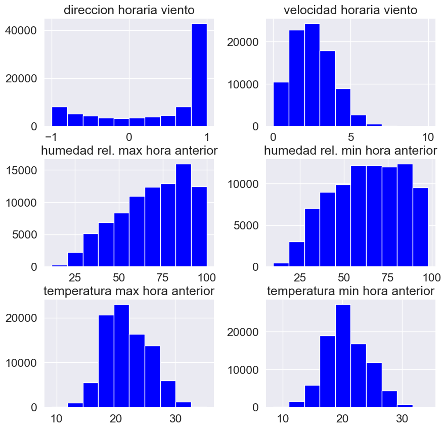
Velocidad Horaria Viento: esta sezgada a la derecha, se observa adicionalmente que la mayoria de observaciones se encuentran en velocidad más bajas.
Dirección Horaria Viento: muestra un sesgo hacia la izquierda. Esto sugiere que, aunque hay una dirección predominante del viento que es más frecuente (representada por el pico en el extremo derecho), también hay ocasiones en las que el viento proviene de direcciones opuestas o contrarias.
Las humedades real max y min se encuentran sezgadas hacia la izquierda.
La temperatura max y min es simetrica puesto que contiene la mayor cantidad de datos en el centro del grafico, esto traduce a que en general la temperatura oscila en 20 grados centigrados.
sns.set_style("whitegrid")
variables = ['velocidad horaria viento', 'direccion horaria viento',
'temperatura max hora anterior', 'humedad relativa horaria',
'presion atmosférica a nivel de estacion']
n_cols = 2
n_rows = int(len(variables) / n_cols) + (len(variables) % n_cols)
fig, axs = plt.subplots(nrows=n_rows, ncols=n_cols, figsize=(10, 4 * n_rows))
for i, var in enumerate(variables):
row = i // n_cols
col = i % n_cols
sns.boxplot(x=df[var], ax=axs[row, col])
axs[row, col].set_title(f'Boxplot de {var}')
plt.tight_layout()
plt.show()
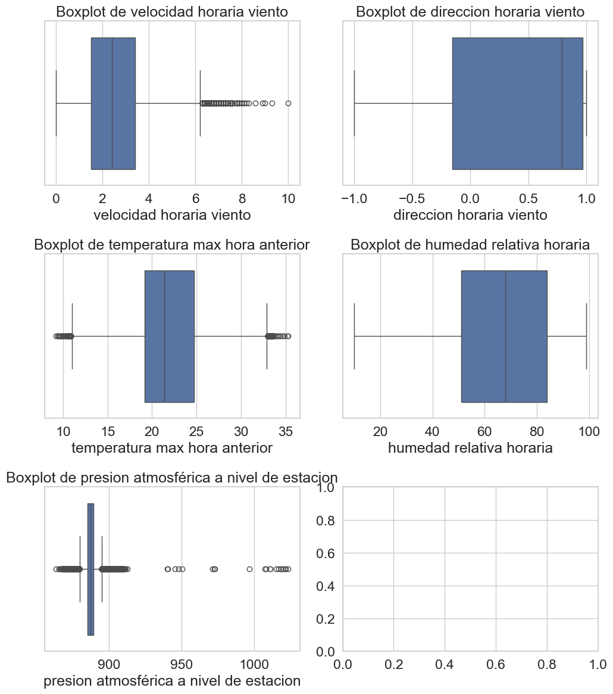
La velocidad horaria es en promedio 3, presenta datos atipicos.
La temperatura en pomedio esta en 23 grados y presenta valores atipicos para cada bigote.
La presion atmosferica no presenta mucha variabilidad.
La humeda relativa esta sesgazada a la derecha.
variables = ['direccion horaria viento',
'temperatura max hora anterior', 'humedad relativa horaria',
'presion atmosférica a nivel de estacion']
fig, axs = plt.subplots(nrows=len(variables), ncols=1, figsize=(10, 4 * len(variables)))
for id, var in enumerate(variables):
sns.regplot(data=df, x=var, y='velocidad horaria viento', scatter=True, line_kws={"color": "blue"}, ax=axs[id])
axs[id].set_title(f'Regplot de {var}')
plt.tight_layout()
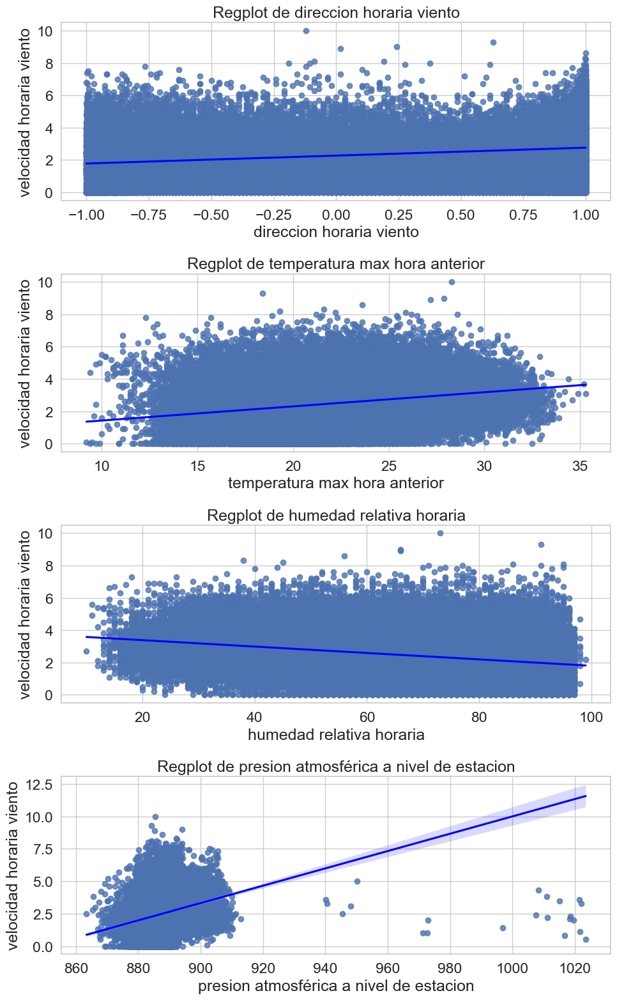
Se identifica lo siguiente:
Una mayor temperatura no afecta sustancialmente la velocidad del viento.
Al incrementar la humedad relativa tambien aumenta la velocidad del viento.
A mayor humedad relativa menor sera la velocidad del viento.
La presion atmosferica a nivel de estacion aumenta directamente la velocidad horaria del viento.
corr_matrix = df.corr()
import numpy as np
sns.set(font_scale=1.8)
plt.figure(figsize=(10,10))
mask = np.triu(np.ones_like(corr_matrix, dtype=bool))
sns.heatmap(corr_matrix, mask=mask, cbar=True, fmt='.1f', annot=True, annot_kws={'size': 15}, cmap='coolwarm');
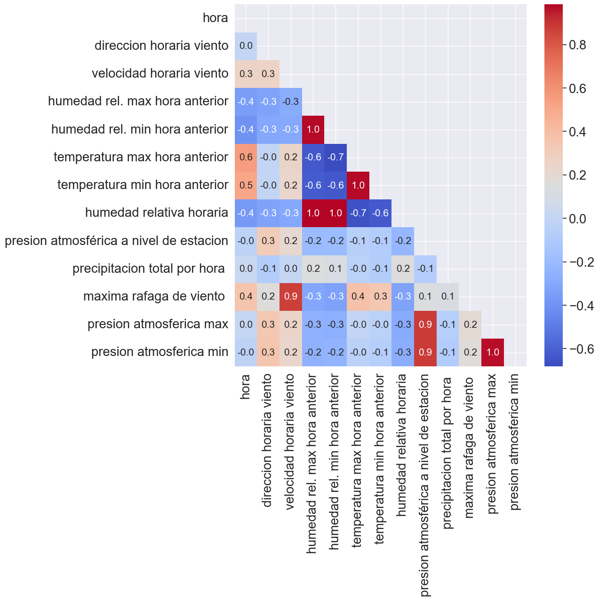
Se observa que hay variables con correlaciones de 1, esto es, estan altamente relacionadas y por lo tanto son redundantes para el modelo. Se decide entonces utilizar el método VIF (Variance Inflation Factor) para identificar la multicolinealidad en un conjunto de datos y reducirla. Valores de VIF por encima de 5-10 sugiere que hay multicolinealidad alta entre la variable y al menos una otra variable y por lo tanto debe de ser removida del modelo.
import statsmodels.api as sm
from statsmodels.stats.outliers_influence import variance_inflation_factor
df_vif = df
df_vif= df_vif.drop(['velocidad horaria viento'],axis=1)
df_vif = df_vif.replace([np.inf, -np.inf], np.nan).dropna()
X = df_vif.assign(const=1)
vif_data = pd.DataFrame()
vif_data["feature"] = df_vif.columns
vif_data["VIF"] = [variance_inflation_factor(X.values, i) for i in range(df_vif.shape[1])]
vif_data = vif_data[vif_data["feature"] != "const"]
print(vif_data)
feature VIF
0 hora 1.535066
1 direccion horaria viento 1.312001
2 humedad rel. max hora anterior 77.951749
3 humedad rel. min hora anterior 80.849151
4 temperatura max hora anterior 68.492554
5 temperatura min hora anterior 57.283224
6 humedad relativa horaria 51.851514
7 presion atmosférica a nivel de estacion 4.900754
8 precipitacion total por hora 1.122183
9 maxima rafaga de viento 1.325654
10 presion atmosferica max 16.065974
11 presion atmosferica min 16.499324
Se removera la columna humedad rel. min hora anterior pues esta presenta el VIF más grande.
df_vif= df_vif.drop(["humedad rel. min hora anterior"],axis=1)
X = df_vif.assign(const=1)
vif_data = pd.DataFrame()
vif_data["feature"] = df_vif.columns
vif_data["VIF"] = [variance_inflation_factor(X.values, i) for i in range(df_vif.shape[1])]
vif_data = vif_data[vif_data["feature"] != "const"]
print(vif_data)
feature VIF
0 hora 1.529583
1 direccion horaria viento 1.311674
2 humedad rel. max hora anterior 41.754347
3 temperatura max hora anterior 30.834055
4 temperatura min hora anterior 26.788844
5 humedad relativa horaria 46.388935
6 presion atmosférica a nivel de estacion 4.900632
7 precipitacion total por hora 1.122181
8 maxima rafaga de viento 1.325499
9 presion atmosferica max 16.044685
10 presion atmosferica min 16.492733
La variable humedad rel. max hora anterior se remueve del dataframe puesto que es la que mayor VIF presenta (41.75)
df_vif= df_vif.drop(["humedad rel. max hora anterior"],axis=1)
X = df_vif.assign(const=1)
vif_data = pd.DataFrame()
vif_data["feature"] = df_vif.columns
vif_data["VIF"] = [variance_inflation_factor(X.values, i) for i in range(df_vif.shape[1])]
vif_data = vif_data[vif_data["feature"] != "const"]
print(vif_data)
feature VIF
0 hora 1.529426
1 direccion horaria viento 1.311637
2 temperatura max hora anterior 24.599178
3 temperatura min hora anterior 21.533187
4 humedad relativa horaria 2.446961
5 presion atmosférica a nivel de estacion 4.900491
6 precipitacion total por hora 1.105983
7 maxima rafaga de viento 1.325406
8 presion atmosferica max 16.030280
9 presion atmosferica min 16.490573
La columna temperatura max hora anterior se elimina del modelo por tener el VIF mayor.
df_vif= df_vif.drop(["temperatura max hora anterior"],axis=1)
X = df_vif.assign(const=1)
vif_data = pd.DataFrame()
vif_data["feature"] = df_vif.columns
vif_data["VIF"] = [variance_inflation_factor(X.values, i) for i in range(df_vif.shape[1])]
vif_data = vif_data[vif_data["feature"] != "const"]
print(vif_data)
feature VIF
0 hora 1.464874
1 direccion horaria viento 1.286975
2 temperatura min hora anterior 2.240830
3 humedad relativa horaria 2.252262
4 presion atmosférica a nivel de estacion 4.900068
5 precipitacion total por hora 1.074089
6 maxima rafaga de viento 1.315053
7 presion atmosferica max 15.726554
8 presion atmosferica min 16.212432
Se elimina la columna presion atmosferica min debido a que tiene el VIF mas grande entre las variables presentes.
df_vif= df_vif.drop(["presion atmosferica min"],axis=1)
X = df_vif.assign(const=1)
vif_data = pd.DataFrame()
vif_data["feature"] = df_vif.columns
vif_data["VIF"] = [variance_inflation_factor(X.values, i) for i in range(df_vif.shape[1])]
vif_data = vif_data[vif_data["feature"] != "const"]
print(vif_data)
feature VIF
0 hora 1.449601
1 direccion horaria viento 1.282038
2 temperatura min hora anterior 2.235192
3 humedad relativa horaria 2.246231
4 presion atmosférica a nivel de estacion 4.552538
5 precipitacion total por hora 1.069973
6 maxima rafaga de viento 1.315007
7 presion atmosferica max 4.757647
No hay variable con VIF >5 por lo que se concluye que no hay variables que esten altamentes correlacionadas.
df.drop(["humedad rel. min hora anterior","humedad rel. max hora anterior",
"temperatura max hora anterior","presion atmosferica min","presion atmosferica min"],
inplace=True,axis=1)
df.info()
<class 'pandas.core.frame.DataFrame'>
RangeIndex: 87693 entries, 0 to 87692
Data columns (total 9 columns):
# Column Non-Null Count Dtype
--- ------ -------------- -----
0 hora 87693 non-null int64
1 direccion horaria viento 87693 non-null float64
2 velocidad horaria viento 87693 non-null float64
3 temperatura min hora anterior 87693 non-null float64
4 humedad relativa horaria 87693 non-null float64
5 presion atmosférica a nivel de estacion 87693 non-null float64
6 precipitacion total por hora 87693 non-null float64
7 maxima rafaga de viento 87693 non-null float64
8 presion atmosferica max 87693 non-null float64
dtypes: float64(8), int64(1)
memory usage: 6.0 MB
Datos Fraud Detection#
import klib
df1 = pd.read_csv(r"C:\Users\jose_\OneDrive\Documentos guardados\Maestria analisis de datos\Machine Learning Likni\Machine learning Likir\Informe_Machine_Learning\Datos_fraude\train_transaction.csv")
df2 = pd.read_csv(r"C:\Users\jose_\OneDrive\Documentos guardados\Maestria analisis de datos\Machine Learning Likni\Machine learning Likir\Informe_Machine_Learning\Datos_fraude\train_identity.csv")
df_f = pd.merge(df1,df2,on="TransactionID",how="left")
df_f.info()
<class 'pandas.core.frame.DataFrame'>
RangeIndex: 590540 entries, 0 to 590539
Columns: 434 entries, TransactionID to DeviceInfo
dtypes: float64(399), int64(4), object(31)
memory usage: 1.9+ GB
df_f.drop(["TransactionID"],axis=1,inplace=True)
El DataFrame tiene 590,540 filas, contiene 434 columnas, es decir, 434 características o variables diferentes para cada observación.
Tipos de datos:
Float64: 399 de las columnas contienen datos de tipo decimal.
Int64: 4 de las columnas contienen datos enteros.
Object: 31 columnas contienen datos de tipo objeto.
def reduce_mem_usage(df):
start_mem = df.memory_usage(index=True, deep=True).sum() / 1024**2
start_mem_GB = df.memory_usage(index=True, deep=True).sum() / 1024**3
print(f'Initial memory usage of dataframe is {start_mem:.2f} MB/{start_mem_GB:.2f} GB')
for col in df.columns:
col_type = df[col].dtype
if col_type != object:
c_min = df[col].min()
c_max = df[col].max()
if str(col_type)[:3] == 'int':
if c_min > np.iinfo(np.int8).min and c_max < np.iinfo(np.int8).max:
df[col] = df[col].astype(np.int8)
elif c_min > np.iinfo(np.int16).min and c_max < np.iinfo(np.int16).max:
df[col] = df[col].astype(np.int16)
elif c_min > np.iinfo(np.int32).min and c_max < np.iinfo(np.int32).max:
df[col] = df[col].astype(np.int32)
elif c_min > np.iinfo(np.int64).min and c_max < np.iinfo(np.int64).max:
df[col] = df[col].astype(np.int64)
else:
if c_min > np.finfo(np.float16).min and c_max < np.finfo(np.float16).max:
df[col] = df[col].astype(np.float16)
elif c_min > np.finfo(np.float32).min and c_max < np.finfo(np.float32).max:
df[col] = df[col].astype(np.float32)
else:
df[col] = df[col].astype(np.float64)
else:
df[col] = df[col].astype('category')
end_mem = df.memory_usage(index=True, deep=True).sum() / 1024**2
end_mem_GB = df.memory_usage(index=True, deep=True).sum() / 1024**3
reduction = 100 * (start_mem - end_mem) / start_mem
print(f'Memory usage after optimization is: {end_mem:.2f} MB/{end_mem_GB:.2f} GB')
print(f'Decreased by {reduction:.1f}%')
return df
df_f = reduce_mem_usage(df_f)
Initial memory usage of dataframe is 2562.59 MB/2.50 GB
Memory usage after optimization is: 523.45 MB/0.51 GB
Decreased by 79.6%
(df_f.isnull().sum()/(len(df_f)))*100
isFraud 0.000000
TransactionDT 0.000000
TransactionAmt 0.000000
ProductCD 0.000000
card1 0.000000
...
id_36 76.126088
id_37 76.126088
id_38 76.126088
DeviceType 76.155722
DeviceInfo 79.905510
Length: 433, dtype: float64
Se observa que hay variables con hasta 80% de valores faltantes, se decide remover del modelo aquellas variables que tengan 40% o mas de valores faltantes.
threshold = len(df_f) * 0.4
df_f = df_f.dropna(axis=1, thresh=threshold)
(df_f.isnull().sum()/(len(df_f)))*100
isFraud 0.000000
TransactionDT 0.000000
TransactionAmt 0.000000
ProductCD 0.000000
card1 0.000000
...
V317 0.002032
V318 0.002032
V319 0.002032
V320 0.002032
V321 0.002032
Length: 225, dtype: float64
Se redujo el modelo el dataframe de un total de 434 columnas a 226.
Se realizara la imputacion de los valores numericos que tienen faltantes con el imputer.
from sklearn.impute import SimpleImputer
numeric_cols = df_f.select_dtypes(include='number').columns
non_numeric_cols = df_f.select_dtypes(exclude='number').columns
df_copy = df_f.copy()
imputer = SimpleImputer(strategy='median')
df_copy[numeric_cols] = imputer.fit_transform(df_f[numeric_cols])
df_f = df_copy
(df_f[numeric_cols].isnull().sum()/(len(df_f)))*100
isFraud 0.0
TransactionDT 0.0
TransactionAmt 0.0
card1 0.0
card2 0.0
...
V317 0.0
V318 0.0
V319 0.0
V320 0.0
V321 0.0
Length: 212, dtype: float64
(df_f[non_numeric_cols].isnull().sum()/(len(df_f)))*100
ProductCD 0.000000
card4 0.267044
card6 0.266028
P_emaildomain 15.994852
M1 45.907136
M2 45.907136
M3 45.907136
M4 47.658753
M5 59.349409
M6 28.678836
M7 58.635317
M8 58.633115
M9 58.633115
dtype: float64
Se procede a eliminar las filas que tengan valores faltantes dentro de las variables.
df_f = df_f.dropna(subset=non_numeric_cols)
(df_f[non_numeric_cols].isnull().sum()/(len(df_f)))*100
ProductCD 0.0
card4 0.0
card6 0.0
P_emaildomain 0.0
M1 0.0
M2 0.0
M3 0.0
M4 0.0
M5 0.0
M6 0.0
M7 0.0
M8 0.0
M9 0.0
dtype: float64
from scipy.stats import chi2_contingency
def chi2_test_for_all_pairs(df):
categorical_columns = df.select_dtypes(['object', 'category']).columns
results = []
# Iterar sobre cada par de columnas categóricas
for i in range(len(categorical_columns)):
for j in range(i+1, len(categorical_columns)):
col1 = categorical_columns[i]
col2 = categorical_columns[j]
# Crear tabla de contingencia
contingency_table = pd.crosstab(df[col1], df[col2])
# Realizar la prueba chi2
chi2, p, _, _ = chi2_contingency(contingency_table)
results.append({
'Variable 1': col1,
'Variable 2': col2,
'Chi2 Statistic': chi2,
'p-value': p
})
return pd.DataFrame(results)
chi2_test_for_all_pairs(df_f)
| Variable 1 | Variable 2 | Chi2 Statistic | p-value | |
|---|---|---|---|---|
| 0 | ProductCD | card4 | 0.000000 | 1.000000e+00 |
| 1 | ProductCD | card6 | 0.000000 | 1.000000e+00 |
| 2 | ProductCD | P_emaildomain | 0.000000 | 1.000000e+00 |
| 3 | ProductCD | M1 | 0.000000 | 1.000000e+00 |
| 4 | ProductCD | M2 | 0.000000 | 1.000000e+00 |
| ... | ... | ... | ... | ... |
| 73 | M6 | M8 | 656.785713 | 7.470747e-145 |
| 74 | M6 | M9 | 858.962353 | 8.187359e-189 |
| 75 | M7 | M8 | 27707.428312 | 0.000000e+00 |
| 76 | M7 | M9 | 3393.410273 | 0.000000e+00 |
| 77 | M8 | M9 | 11323.819204 | 0.000000e+00 |
78 rows × 4 columns
Se observa que la variable M7 esta relacionada con M8 ( valor p=0), y a la vez m7 esta relacionada con M9, al igual que M8 con M9, por lo que se removeran M8 y M9. M1 esta relacionada con M2-M9 por lo que se remueven el resto de M.
df_f.drop(["M2", "M3", "M4", "M5", "M6", "M7", "M8", "M9"], axis=1, inplace=True)
df_f.columns
Index(['isFraud', 'TransactionDT', 'TransactionAmt', 'ProductCD', 'card1',
'card2', 'card3', 'card4', 'card5', 'card6',
...
'V312', 'V313', 'V314', 'V315', 'V316', 'V317', 'V318', 'V319', 'V320',
'V321'],
dtype='object', length=217)
La variable del modelo “V”, dice ofrecer una gran variedad de funciones, como la clasificación, el recuento y otras relaciones entre entidades, sin embargo, ya que no se cuenta con entendimiento mayor de que a que se refiere. Adicionalmente causa que el dataframe sea extenso sin ser necesario (Hay 180 columnas de Vxxx en el dataframe) por lo que sera removido.
columns_to_drop = [col for col in df_f.columns if col.startswith('V')]
num_columns_to_drop = len(columns_to_drop)
print(columns_to_drop)
print(f'Number of columns to drop: {num_columns_to_drop}')
['V1', 'V2', 'V3', 'V4', 'V5', 'V6', 'V7', 'V8', 'V9', 'V10', 'V11', 'V12', 'V13', 'V14', 'V15', 'V16', 'V17', 'V18', 'V19', 'V20', 'V21', 'V22', 'V23', 'V24', 'V25', 'V26', 'V27', 'V28', 'V29', 'V30', 'V31', 'V32', 'V33', 'V34', 'V35', 'V36', 'V37', 'V38', 'V39', 'V40', 'V41', 'V42', 'V43', 'V44', 'V45', 'V46', 'V47', 'V48', 'V49', 'V50', 'V51', 'V52', 'V53', 'V54', 'V55', 'V56', 'V57', 'V58', 'V59', 'V60', 'V61', 'V62', 'V63', 'V64', 'V65', 'V66', 'V67', 'V68', 'V69', 'V70', 'V71', 'V72', 'V73', 'V74', 'V75', 'V76', 'V77', 'V78', 'V79', 'V80', 'V81', 'V82', 'V83', 'V84', 'V85', 'V86', 'V87', 'V88', 'V89', 'V90', 'V91', 'V92', 'V93', 'V94', 'V95', 'V96', 'V97', 'V98', 'V99', 'V100', 'V101', 'V102', 'V103', 'V104', 'V105', 'V106', 'V107', 'V108', 'V109', 'V110', 'V111', 'V112', 'V113', 'V114', 'V115', 'V116', 'V117', 'V118', 'V119', 'V120', 'V121', 'V122', 'V123', 'V124', 'V125', 'V126', 'V127', 'V128', 'V129', 'V130', 'V131', 'V132', 'V133', 'V134', 'V135', 'V136', 'V137', 'V279', 'V280', 'V281', 'V282', 'V283', 'V284', 'V285', 'V286', 'V287', 'V288', 'V289', 'V290', 'V291', 'V292', 'V293', 'V294', 'V295', 'V296', 'V297', 'V298', 'V299', 'V300', 'V301', 'V302', 'V303', 'V304', 'V305', 'V306', 'V307', 'V308', 'V309', 'V310', 'V311', 'V312', 'V313', 'V314', 'V315', 'V316', 'V317', 'V318', 'V319', 'V320', 'V321']
Number of columns to drop: 180
df_f = df_f.drop(columns=columns_to_drop)
df_f.info()
<class 'pandas.core.frame.DataFrame'>
Index: 104194 entries, 2 to 590536
Data columns (total 37 columns):
# Column Non-Null Count Dtype
--- ------ -------------- -----
0 isFraud 104194 non-null float64
1 TransactionDT 104194 non-null float64
2 TransactionAmt 104194 non-null float64
3 ProductCD 104194 non-null category
4 card1 104194 non-null float64
5 card2 104194 non-null float64
6 card3 104194 non-null float64
7 card4 104194 non-null category
8 card5 104194 non-null float64
9 card6 104194 non-null category
10 addr1 104194 non-null float64
11 addr2 104194 non-null float64
12 dist1 104194 non-null float64
13 P_emaildomain 104194 non-null category
14 C1 104194 non-null float64
15 C2 104194 non-null float64
16 C3 104194 non-null float64
17 C4 104194 non-null float64
18 C5 104194 non-null float64
19 C6 104194 non-null float64
20 C7 104194 non-null float64
21 C8 104194 non-null float64
22 C9 104194 non-null float64
23 C10 104194 non-null float64
24 C11 104194 non-null float64
25 C12 104194 non-null float64
26 C13 104194 non-null float64
27 C14 104194 non-null float64
28 D1 104194 non-null float64
29 D2 104194 non-null float64
30 D3 104194 non-null float64
31 D4 104194 non-null float64
32 D5 104194 non-null float64
33 D10 104194 non-null float64
34 D11 104194 non-null float64
35 D15 104194 non-null float64
36 M1 104194 non-null category
dtypes: category(5), float64(32)
memory usage: 26.7 MB
non_numeric_columns = df_f.select_dtypes(exclude='number')
print(non_numeric_columns)
ProductCD card4 card6 P_emaildomain M1
2 W visa debit outlook.com T
6 W visa debit yahoo.com T
20 W mastercard debit gmail.com T
42 W visa debit gmail.com T
46 W visa debit gmail.com T
... ... ... ... ... ..
590517 W visa credit hotmail.com T
590520 W visa debit yahoo.com T
590522 W visa debit gmail.com T
590524 W mastercard debit gmail.com T
590536 W mastercard debit gmail.com T
[104194 rows x 5 columns]
unique_values = {}
for column in non_numeric_columns:
unique_values[column] = df_f[column].unique()
unique_values
{'ProductCD': ['W']
Categories (5, object): ['C', 'H', 'R', 'S', 'W'],
'card4': ['visa', 'mastercard', 'discover']
Categories (4, object): ['american express', 'discover', 'mastercard', 'visa'],
'card6': ['debit', 'credit', 'debit or credit']
Categories (4, object): ['charge card', 'credit', 'debit', 'debit or credit'],
'P_emaildomain': ['outlook.com', 'yahoo.com', 'gmail.com', 'hotmail.com', 'ymail.com', ..., 'yahoo.es', 'yahoo.com.mx', 'hotmail.es', 'yahoo.de', 'hotmail.fr']
Length: 49
Categories (59, object): ['aim.com', 'anonymous.com', 'aol.com', 'att.net', ..., 'yahoo.de', 'yahoo.es', 'yahoo.fr', 'ymail.com'],
'M1': ['T', 'F']
Categories (2, object): ['F', 'T']}
Se eliminaran las columnas:
Card4, es igual que la variable card6 pero le hace falta un tipo de tarjeta.
P_emaildomain ya que cuenta con 49 tipos de correos distintos y no son de relevancia.
df_f.drop(["card4","P_emaildomain"],inplace=True,axis=1)
Se utilizará el método VIF (Variance Inflation Factor), para reducir la multicorrelacion entre variables.
numeric_cols = df_f.select_dtypes(include='number').columns
from statsmodels.stats.outliers_influence import variance_inflation_factor
df_new = df_f[numeric_cols]
df_new= df_new.drop(["isFraud"],axis=1)
df_new = df_new.replace([np.inf, -np.inf], np.nan).dropna()
X = df_new.assign(const=1)
vif_data = pd.DataFrame()
vif_data["feature"] = df_new.columns
vif_data["VIF"] = [variance_inflation_factor(X.values, i) for i in range(df_new.shape[1])]
vif_data = vif_data[vif_data["feature"] != "const"]
print(vif_data)
feature VIF
0 TransactionDT 1.058000
1 TransactionAmt 1.008020
2 card1 1.006558
3 card2 1.008217
4 card3 1.001092
5 card5 1.020566
6 addr1 1.004651
7 addr2 1.000136
8 dist1 1.018174
9 C1 205.750188
10 C2 86.931570
11 C3 NaN
12 C4 NaN
13 C5 12.378506
14 C6 41.806527
15 C7 NaN
16 C8 NaN
17 C9 50.036354
18 C10 NaN
19 C11 141.216938
20 C12 1.131900
21 C13 13.566563
22 C14 112.922990
23 D1 6.871977
24 D2 5.225816
25 D3 1.497753
26 D4 2.764823
27 D5 1.564188
28 D10 2.073638
29 D11 2.392962
30 D15 3.493695
Antes de proceder a eliminar variables con alta multicolinealidad se removeran aquellas variables con un VIF de NaN puesto que no aportan información y deben ser eliminadas del conjunto de datos antes del análisis, esto ya que su varianza es y por eso retorna NaN.
df_f.drop(["C3","C4","C7","C8","C10"],axis=1,inplace=True)
numeric_cols = df_f.select_dtypes(include='number').columns
df_new = df_f[numeric_cols]
df_new= df_new.drop(["isFraud"],axis=1)
df_new = df_new.replace([np.inf, -np.inf], np.nan).dropna()
X = df_new.assign(const=1)
vif_data = pd.DataFrame()
vif_data["feature"] = df_new.columns
vif_data["VIF"] = [variance_inflation_factor(X.values, i) for i in range(df_new.shape[1])]
vif_data = vif_data[vif_data["feature"] != "const"]
print(vif_data)
feature VIF
0 TransactionDT 1.058000
1 TransactionAmt 1.008020
2 card1 1.006558
3 card2 1.008217
4 card3 1.001092
5 card5 1.020566
6 addr1 1.004651
7 addr2 1.000136
8 dist1 1.018174
9 C1 205.750188
10 C2 86.931570
11 C5 12.378506
12 C6 41.806527
13 C9 50.036354
14 C11 141.216938
15 C12 1.131900
16 C13 13.566563
17 C14 112.922990
18 D1 6.871977
19 D2 5.225816
20 D3 1.497753
21 D4 2.764823
22 D5 1.564188
23 D10 2.073638
24 D11 2.392962
25 D15 3.493695
Se eliminara la variable C1 puesto que tiene el valor VIF mas alto.
df_new= df_new.drop(["C1"],axis=1)
# Calculate VIF
X = df_new.assign(const=1)
vif_data = pd.DataFrame()
vif_data["feature"] = df_new.columns
vif_data["VIF"] = [variance_inflation_factor(X.values, i) for i in range(df_new.shape[1])]
vif_data = vif_data[vif_data["feature"] != "const"]
print(vif_data)
feature VIF
0 TransactionDT 1.057745
1 TransactionAmt 1.005964
2 card1 1.006557
3 card2 1.008193
4 card3 1.001075
5 card5 1.020479
6 addr1 1.004430
7 addr2 1.000136
8 dist1 1.018163
9 C2 86.903986
10 C5 12.356660
11 C6 40.792482
12 C9 49.996886
13 C11 106.351999
14 C12 1.131253
15 C13 13.382130
16 C14 54.847704
17 D1 6.772442
18 D2 5.215653
19 D3 1.495528
20 D4 2.749037
21 D5 1.550689
22 D10 2.070787
23 D11 2.390836
24 D15 3.465711
Se eliminara la variable C11 (VIF 106)
df_new= df_new.drop(["C11"],axis=1)
# Calculate VIF
X = df_new.assign(const=1)
vif_data = pd.DataFrame()
vif_data["feature"] = df_new.columns
vif_data["VIF"] = [variance_inflation_factor(X.values, i) for i in range(df_new.shape[1])]
vif_data = vif_data[vif_data["feature"] != "const"]
print(vif_data)
feature VIF
0 TransactionDT 1.056313
1 TransactionAmt 1.005788
2 card1 1.006545
3 card2 1.008103
4 card3 1.001018
5 card5 1.020453
6 addr1 1.004418
7 addr2 1.000135
8 dist1 1.016906
9 C2 57.548617
10 C5 12.197122
11 C6 32.998171
12 C9 45.630443
13 C12 1.131147
14 C13 12.669180
15 C14 53.433264
16 D1 6.753756
17 D2 5.178326
18 D3 1.495186
19 D4 2.745300
20 D5 1.550195
21 D10 2.024215
22 D11 2.390787
23 D15 3.334946
Se eliminara la variable C2 (VIF 57.5)
df_new= df_new.drop(["C2"],axis=1)
# Calculate VIF
X = df_new.assign(const=1)
vif_data = pd.DataFrame()
vif_data["feature"] = df_new.columns
vif_data["VIF"] = [variance_inflation_factor(X.values, i) for i in range(df_new.shape[1])]
vif_data = vif_data[vif_data["feature"] != "const"]
print(vif_data)
feature VIF
0 TransactionDT 1.056301
1 TransactionAmt 1.005608
2 card1 1.006498
3 card2 1.008088
4 card3 1.001013
5 card5 1.020453
6 addr1 1.004239
7 addr2 1.000135
8 dist1 1.016743
9 C5 11.984986
10 C6 22.854785
11 C9 43.955554
12 C12 1.130235
13 C13 12.665526
14 C14 45.983001
15 D1 6.729330
16 D2 5.177654
17 D3 1.493672
18 D4 2.736933
19 D5 1.550178
20 D10 1.944956
21 D11 2.388690
22 D15 3.332897
Se eliminara la variable C14 (VIF 45.9)
df_new= df_new.drop(["C14"],axis=1)
# Calculate VIF
X = df_new.assign(const=1)
vif_data = pd.DataFrame()
vif_data["feature"] = df_new.columns
vif_data["VIF"] = [variance_inflation_factor(X.values, i) for i in range(df_new.shape[1])]
vif_data = vif_data[vif_data["feature"] != "const"]
print(vif_data)
feature VIF
0 TransactionDT 1.054325
1 TransactionAmt 1.005189
2 card1 1.006160
3 card2 1.007890
4 card3 1.000988
5 card5 1.020066
6 addr1 1.004119
7 addr2 1.000134
8 dist1 1.016558
9 C5 10.761787
10 C6 20.478546
11 C9 30.641297
12 C12 1.125205
13 C13 12.378393
14 D1 6.662580
15 D2 5.177310
16 D3 1.484221
17 D4 2.720760
18 D5 1.547123
19 D10 1.944899
20 D11 2.375893
21 D15 3.329398
Se elimina la columna C9 (VIF 30.6 )
df_new= df_new.drop(["C9"],axis=1)
# Calculate VIF
X = df_new.assign(const=1)
vif_data = pd.DataFrame()
vif_data["feature"] = df_new.columns
vif_data["VIF"] = [variance_inflation_factor(X.values, i) for i in range(df_new.shape[1])]
vif_data = vif_data[vif_data["feature"] != "const"]
print(vif_data)
feature VIF
0 TransactionDT 1.051455
1 TransactionAmt 1.005124
2 card1 1.006083
3 card2 1.007843
4 card3 1.000988
5 card5 1.019922
6 addr1 1.004110
7 addr2 1.000134
8 dist1 1.015435
9 C5 9.776789
10 C6 5.759737
11 C12 1.124706
12 C13 11.780364
13 D1 6.662431
14 D2 5.177076
15 D3 1.483937
16 D4 2.706497
17 D5 1.546785
18 D10 1.944874
19 D11 2.344723
20 D15 3.329063
Se elimina la columna C13 (VIF 11.78)
df_new= df_new.drop(["C13"],axis=1)
# Calculate VIF
X = df_new.assign(const=1)
vif_data = pd.DataFrame()
vif_data["feature"] = df_new.columns
vif_data["VIF"] = [variance_inflation_factor(X.values, i) for i in range(df_new.shape[1])]
vif_data = vif_data[vif_data["feature"] != "const"]
print(vif_data)
feature VIF
0 TransactionDT 1.049659
1 TransactionAmt 1.003928
2 card1 1.006049
3 card2 1.007842
4 card3 1.000978
5 card5 1.019686
6 addr1 1.003595
7 addr2 1.000134
8 dist1 1.015251
9 C5 4.727249
10 C6 4.778186
11 C12 1.102684
12 D1 6.633770
13 D2 5.176115
14 D3 1.467122
15 D4 2.685360
16 D5 1.525899
17 D10 1.937616
18 D11 2.303521
19 D15 3.328903
Se elimina la columna D1 (VIF 6.6
df_new= df_new.drop(["D1"],axis=1)
# Calculate VIF
X = df_new.assign(const=1)
vif_data = pd.DataFrame()
vif_data["feature"] = df_new.columns
vif_data["VIF"] = [variance_inflation_factor(X.values, i) for i in range(df_new.shape[1])]
vif_data = vif_data[vif_data["feature"] != "const"]
print(vif_data)
feature VIF
0 TransactionDT 1.049193
1 TransactionAmt 1.003910
2 card1 1.006041
3 card2 1.007772
4 card3 1.000867
5 card5 1.018383
6 addr1 1.003477
7 addr2 1.000131
8 dist1 1.013704
9 C5 4.725787
10 C6 4.774172
11 C12 1.074314
12 D2 1.540065
13 D3 1.287921
14 D4 2.647147
15 D5 1.439623
16 D10 1.931183
17 D11 2.290733
18 D15 3.271063
No hay variable con VIF superior o igual a 5 por lo que hay mas variables que presenten una alta multicolinealidad entre si.
df_f.drop(["C1","C11","C2","C14","C9","C13","D1"],axis=1,inplace=True)
df_f.info()
<class 'pandas.core.frame.DataFrame'>
Index: 104194 entries, 2 to 590536
Data columns (total 23 columns):
# Column Non-Null Count Dtype
--- ------ -------------- -----
0 isFraud 104194 non-null float64
1 TransactionDT 104194 non-null float64
2 TransactionAmt 104194 non-null float64
3 ProductCD 104194 non-null category
4 card1 104194 non-null float64
5 card2 104194 non-null float64
6 card3 104194 non-null float64
7 card5 104194 non-null float64
8 card6 104194 non-null category
9 addr1 104194 non-null float64
10 addr2 104194 non-null float64
11 dist1 104194 non-null float64
12 C5 104194 non-null float64
13 C6 104194 non-null float64
14 C12 104194 non-null float64
15 D2 104194 non-null float64
16 D3 104194 non-null float64
17 D4 104194 non-null float64
18 D5 104194 non-null float64
19 D10 104194 non-null float64
20 D11 104194 non-null float64
21 D15 104194 non-null float64
22 M1 104194 non-null category
dtypes: category(3), float64(20)
memory usage: 17.0 MB
Se procede a hacer onehotencoding de las variables categoricas para que puedan ser usadas en los modelos de machine learning.
columns_to_encode = ["ProductCD", "card6", "M1"]
from sklearn.preprocessing import OneHotEncoder
import pandas as pd
# Usar sparse_output
encoder = OneHotEncoder(sparse_output=False, drop=None)
data_encoded = encoder.fit_transform(df_f[columns_to_encode])
encoded_df = pd.DataFrame(data_encoded, columns=encoder.get_feature_names_out(columns_to_encode))
df_f_dropped = df_f.drop(columns_to_encode, axis=1).reset_index(drop=True)
df_f_encoded = pd.concat([df_f_dropped, encoded_df], axis=1)
df_f = df_f_encoded
Tras haber realizado una limpieza del dataframe finalmente se prosigue al analisis como tal.
Descripcion del tipo de variables#
df_f.info()
<class 'pandas.core.frame.DataFrame'>
RangeIndex: 104194 entries, 0 to 104193
Data columns (total 26 columns):
# Column Non-Null Count Dtype
--- ------ -------------- -----
0 isFraud 104194 non-null float64
1 TransactionDT 104194 non-null float64
2 TransactionAmt 104194 non-null float64
3 card1 104194 non-null float64
4 card2 104194 non-null float64
5 card3 104194 non-null float64
6 card5 104194 non-null float64
7 addr1 104194 non-null float64
8 addr2 104194 non-null float64
9 dist1 104194 non-null float64
10 C5 104194 non-null float64
11 C6 104194 non-null float64
12 C12 104194 non-null float64
13 D2 104194 non-null float64
14 D3 104194 non-null float64
15 D4 104194 non-null float64
16 D5 104194 non-null float64
17 D10 104194 non-null float64
18 D11 104194 non-null float64
19 D15 104194 non-null float64
20 ProductCD_W 104194 non-null float64
21 card6_credit 104194 non-null float64
22 card6_debit 104194 non-null float64
23 card6_debit or credit 104194 non-null float64
24 M1_F 104194 non-null float64
25 M1_T 104194 non-null float64
dtypes: float64(26)
memory usage: 20.7 MB
Las variables TransactionDt y TransactionAmt se removeran del dataframe, por otro lado, las variables address y distancia seran removidas tambien porque se cuenta con informacion del pais donde fue hecha la transaccion, por lo tanto redundan.
df_f.drop(["TransactionDT","TransactionAmt","addr1","addr2","dist1"],inplace=True,axis=1)
Calcular número de observaciones, media, desviación estándar, mínimo, máximo, cuartiles#
df_f.describe().T
| count | mean | std | min | 25% | 50% | 75% | max | |
|---|---|---|---|---|---|---|---|---|
| isFraud | 104194.0 | 0.031249 | 0.173992 | 0.0 | 0.0 | 0.0 | 0.0 | 1.0 |
| card1 | 104194.0 | 9892.715473 | 4808.434119 | 1004.0 | 6311.5 | 9653.0 | 13663.0 | 18393.0 |
| card2 | 104194.0 | 353.118231 | 153.390421 | 100.0 | 206.0 | 360.0 | 490.0 | 600.0 |
| card3 | 104194.0 | 150.001238 | 0.908916 | 100.0 | 150.0 | 150.0 | 150.0 | 231.0 |
| card5 | 104194.0 | 201.068948 | 39.923421 | 100.0 | 166.0 | 226.0 | 226.0 | 235.0 |
| C5 | 104194.0 | 1.573315 | 13.738595 | 0.0 | 0.0 | 0.0 | 0.0 | 291.0 |
| C6 | 104194.0 | 2.804154 | 11.183598 | 1.0 | 1.0 | 1.0 | 2.0 | 324.0 |
| C12 | 104194.0 | 0.120333 | 0.343714 | 0.0 | 0.0 | 0.0 | 0.0 | 4.0 |
| D2 | 104194.0 | 119.018312 | 121.706645 | 0.0 | 58.0 | 97.0 | 97.0 | 638.0 |
| D3 | 104194.0 | 20.269181 | 55.295476 | 0.0 | 2.0 | 8.0 | 8.0 | 661.0 |
| D4 | 104194.0 | 123.171123 | 182.208799 | -122.0 | 0.0 | 16.0 | 200.0 | 675.0 |
| D5 | 104194.0 | 32.580158 | 80.391769 | 0.0 | 3.0 | 10.0 | 12.0 | 671.0 |
| D10 | 104194.0 | 109.971025 | 174.000499 | 0.0 | 0.0 | 6.0 | 156.0 | 672.0 |
| D11 | 104194.0 | 112.177237 | 167.487081 | -53.0 | 0.0 | 11.0 | 183.0 | 664.0 |
| D15 | 104194.0 | 146.615055 | 194.261467 | -53.0 | 0.0 | 38.0 | 268.0 | 671.0 |
| ProductCD_W | 104194.0 | 1.000000 | 0.000000 | 1.0 | 1.0 | 1.0 | 1.0 | 1.0 |
| card6_credit | 104194.0 | 0.166747 | 0.372751 | 0.0 | 0.0 | 0.0 | 0.0 | 1.0 |
| card6_debit | 104194.0 | 0.833234 | 0.372768 | 0.0 | 1.0 | 1.0 | 1.0 | 1.0 |
| card6_debit or credit | 104194.0 | 0.000019 | 0.004381 | 0.0 | 0.0 | 0.0 | 0.0 | 1.0 |
| M1_F | 104194.0 | 0.000019 | 0.004381 | 0.0 | 0.0 | 0.0 | 0.0 | 1.0 |
| M1_T | 104194.0 | 0.999981 | 0.004381 | 0.0 | 1.0 | 1.0 | 1.0 | 1.0 |
isFraud: Aproximadamente el 3.12% de las transacciones son fraudulentas.
card6_debit: Aproximadamente el 83.32% de las tarjetas son de débito.
card6_debit or credit y M1_T: Ambas columnas tienen valores cercanos a 1 para la mayoría de las entradas, esto sugiere que puede haber poca variación en estos.
sns.set_style("whitegrid")
def annotate_counts(ax):
for p in ax.patches:
ax.annotate(f'{int(p.get_height())}', (p.get_x() + p.get_width() / 2., p.get_height()),
ha='center', va='center', fontsize=12, color='black', xytext=(0, 9),
textcoords='offset points')
ax= sns.countplot(data=df_f, x= "isFraud")
plt.xlabel("Fraude")
plt.ylabel("Cantidad")
annotate_counts(ax)
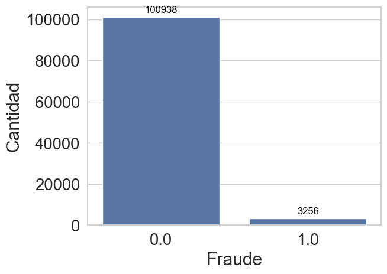
Se observa que hay un alto desbalance en las clases, esto puede corregirse con tecnicas como Smote.
Histograma de variables numericas#
sns.set(font_scale=1.5)
df_f.iloc[: , 1:-6].hist(figsize = (15,15), color = 'blue');
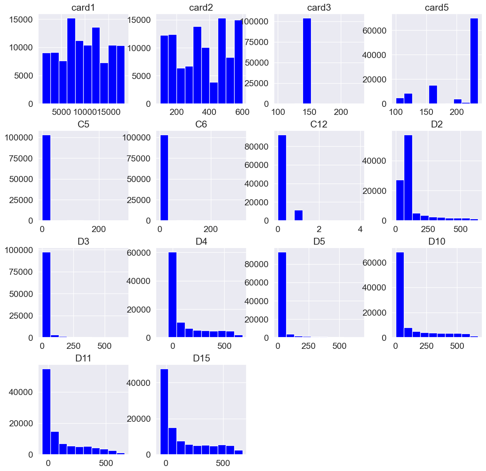
df_f.to_csv("fraude.csv",index=False)
cat_cols = df_f.select_dtypes(include=['object']).columns
num_cols = ["isFraud", "M1_F", "card6_debit or credit", "C6"]
fig, axes = plt.subplots(nrows=2, ncols=2, figsize=(12, 10))
sns.set(font_scale=1.4)
for idx, col in enumerate(num_cols):
if idx < 4:
ax = axes[idx//2, idx%2]
sns.boxplot(x=df_f[col], ax=ax)
ax.set_title(f'Boxplot de {col}')
plt.tight_layout()
plt.show()
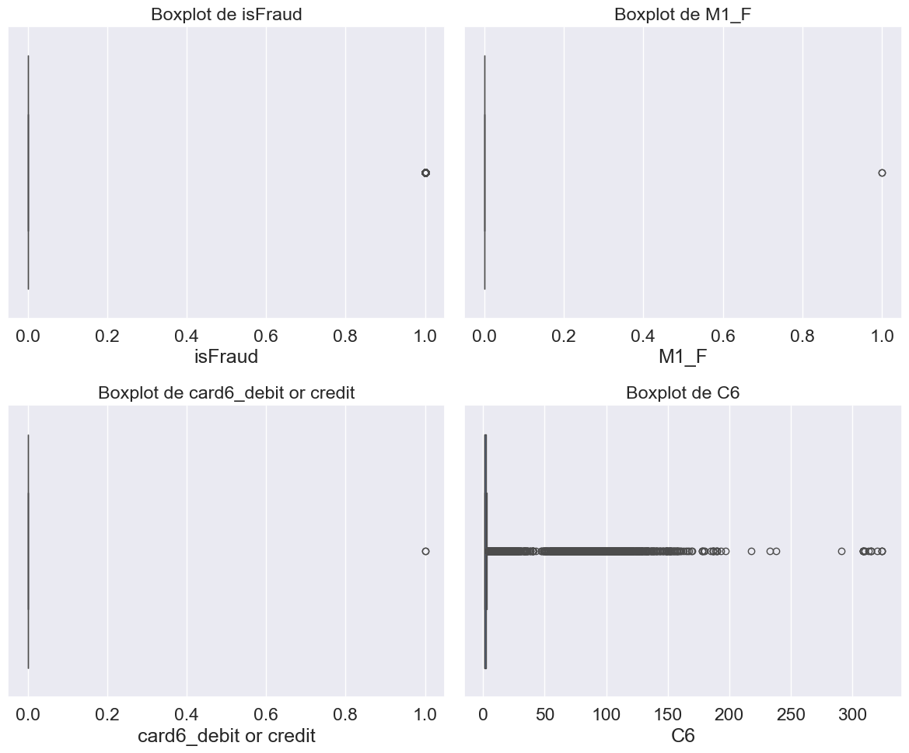
Se observa que:
La mayoria de datos se encuentra en la columna de fraude como se habia mencionado anteriormente
La mayoria de pagos fueron realizados con tarjeta de debito.
La tarjeta C6 fue utilizada un gran numero de veces, se evidencian un numero significativos de valores atipicos para esta variable.
def plot_columns_vs_fraud(df, columns):
fig, axes = plt.subplots(nrows=2, ncols=2, figsize=(15, 10))
axes = axes.ravel()
for i, col in enumerate(columns):
sns.regplot(x=col, y='isFraud', data=df, scatter_kws={'s':5, 'alpha':0.3}, line_kws={'color':'red'}, ax=axes[i])
axes[i].set_title(f'Relationship between {col} and isFraud')
plt.tight_layout()
plt.show()
columns_to_plot = ['C6', 'D11', 'ProductCD_W', 'M1_T']
plot_columns_vs_fraud(df_f, columns_to_plot)
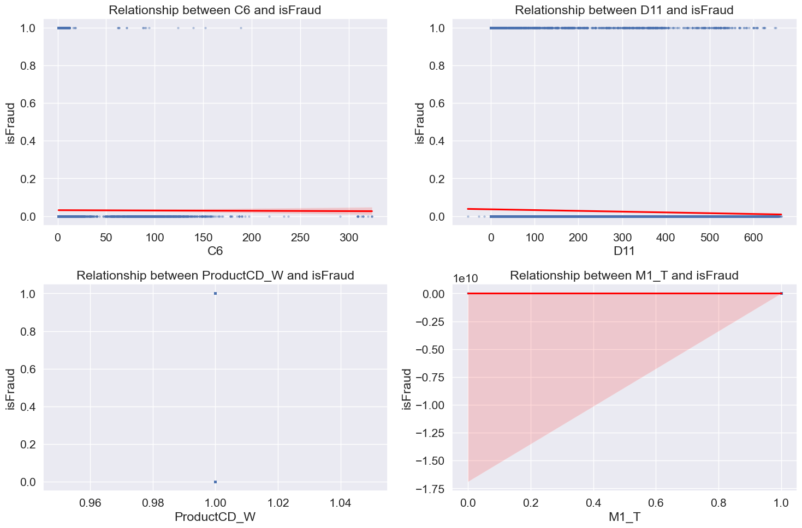
Se observa que mayor direcciones asociadas a una tarjeta de credito no influencia en la posibilidad de que sea fraude la transaccion, además se ve una que el hecho de que coincidan o no los nombres en la tarjeta no dictamina si sera fraude una transaccion.
Ejercicio 2. Modelo de clasificación#
from sklearn.model_selection import train_test_split, GridSearchCV
from sklearn.preprocessing import StandardScaler
from sklearn.metrics import precision_score, recall_score, f1_score, roc_auc_score, roc_curve, auc
from sklearn.pipeline import make_pipeline
from sklearn.neighbors import KNeighborsClassifier
from sklearn.linear_model import Ridge, LogisticRegression
from sklearn.naive_bayes import GaussianNB, BernoulliNB
from sklearn.svm import SVC
from sklearn.neural_network import MLPClassifier
import xgboost as xgb
from sklearn.linear_model import Lasso
from sklearn.metrics import confusion_matrix
from sklearn.metrics import ConfusionMatrixDisplay
from sklearn.model_selection import cross_val_score
import itertools
from imblearn.over_sampling import SMOTE
from sklearn.utils import resample
Los datos de fraude presentan imbalance severo por lo que se utilizara la tecnica de Smote, la cual creara datos sinteticos y balanceara las caracteristicas.
X = df_f.drop('isFraud', axis=1)
y = df_f['isFraud']
X_train, X_test, y_train, y_test = train_test_split(X, y, random_state=0)
smote = SMOTE(random_state=42)
X_sampled, y_sampled = smote.fit_resample(X_train, y_train)
Por el largo tiempo de computacion se reducira el tamaño del dataframe.
X_sampled.shape
(151366, 20)
sample_size = int(0.08 * len(X_sampled))
X_sampled, y_sampled = resample(X_sampled, y_sampled, n_samples=sample_size, random_state=42, stratify=y_sampled)
X_sampled.shape
(12109, 20)
def custom_plot_confusion_matrix(cm, classes, normalize=False, title='Confusion matrix', cmap=plt.cm.Blues):
if normalize:
cm = cm.astype('float') / cm.sum(axis=1)[:, np.newaxis]
print("Normalized confusion matrix")
else:
print('Confusion matrix, without normalization')
plt.imshow(cm, interpolation='nearest', cmap=cmap)
plt.title(title)
plt.colorbar()
tick_marks = np.arange(len(classes))
plt.xticks(tick_marks, classes, rotation=45)
plt.yticks(tick_marks, classes)
fmt = '.2f' if normalize else 'd'
thresh = cm.max() / 2.
for i, j in itertools.product(range(cm.shape[0]), range(cm.shape[1])):
plt.text(j, i, format(cm[i, j], fmt),
horizontalalignment="center",
color="white" if cm[i, j] > thresh else "black")
plt.tight_layout()
plt.ylabel('True label')
plt.xlabel('Predicted label')
plt.show()
models = {
"Knn": (KNeighborsClassifier(), {'kneighborsclassifier__n_neighbors': [1, 2, 3, 4, 5, 6, 7, 8, 9, 10]}),
"Naive Bayes": (GaussianNB(), {}),
"XGBoost": (xgb.XGBClassifier(eval_metric='logloss'), {'xgbclassifier__n_estimators': [100, 200, 300], 'xgbclassifier__max_depth': [3, 4, 5]}),
"SVc": (SVC(probability=True), {'svc__C': [0.01, 1, 10], 'svc__gamma': [0.01, 1, 10], 'svc__kernel': ["rbf"]}),
"MLP": (MLPClassifier(max_iter=5000), {'mlpclassifier__hidden_layer_sizes': [1, 10, 100], 'mlpclassifier__alpha': [0.01, 0.1, 1]})
}
results_df = pd.DataFrame(columns=["Model","Precision", "Recall", "f1-score", "AUC", "Test set score"])
for model_name, (model, params) in models.items():
print(f"Entrenando modelo: {model_name}")
pipe = make_pipeline(StandardScaler(), model)
grid = GridSearchCV(pipe, param_grid=params, cv=5, n_jobs=-1, scoring='roc_auc')
grid.fit(X_sampled, y_sampled)
y_pred = grid.predict(X_test)
y_prob = grid.predict_proba(X_test)[:,1]
precision = precision_score(y_test, y_pred)
recall = recall_score(y_test, y_pred)
f1 = f1_score(y_test, y_pred)
auc = roc_auc_score(y_test, y_pred)
fpr, tpr, _ = roc_curve(y_test, y_prob)
plt.figure(figsize=(10, 6))
plt.plot(fpr, tpr, label=f'ROC curve (area = {auc:.2f})')
plt.plot([0, 1], [0, 1], 'k--')
plt.xlabel('False Positive Rate')
plt.ylabel('True Positive Rate')
plt.title(f'ROC Curve para {model_name}')
plt.legend(loc="lower right")
plt.show()
cm = confusion_matrix(y_test, y_pred)
custom_plot_confusion_matrix(cm, classes=[0, 1], title=f'Confusion Matrix for {model_name}')
result = {
"Model": model_name,
"Precision": precision,
"Recall": recall,
"f1-score": f1,
"AUC": auc,
"Test set score": grid.score(X_test, y_test)
}
results_df = pd.concat([results_df, pd.DataFrame([result])], ignore_index=True)
print(results_df)
Entrenando modelo: Knn
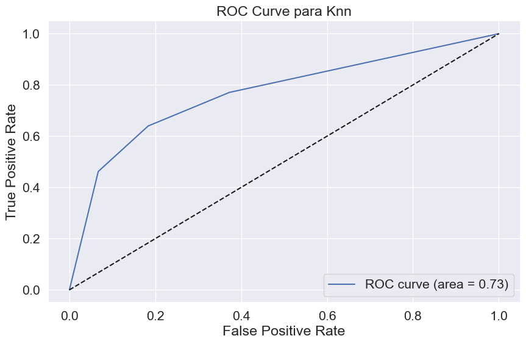
Confusion matrix, without normalization
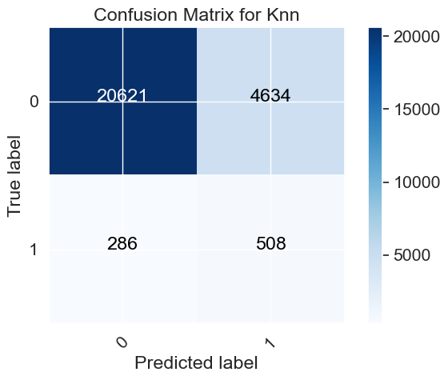
Entrenando modelo: Naive Bayes
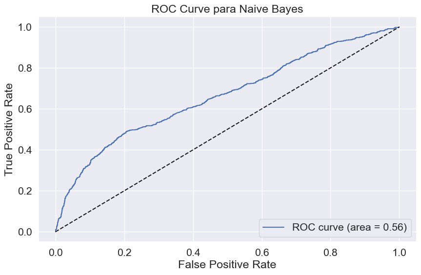
Confusion matrix, without normalization
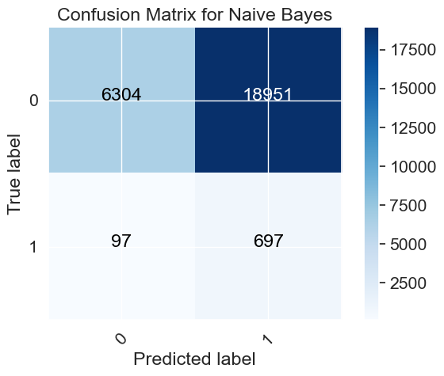
Entrenando modelo: XGBoost
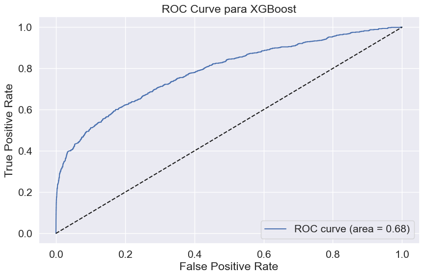
Confusion matrix, without normalization
Entrenando modelo: SVc
Knn (K-Nearest Neighbors)
Precisión: 9.9%: De todas las predicciones positivas realizadas, alrededor del 10% fueron correctas. Recall: el modelo identificó correctamente el 64.1%. AUC: 72.9%: es un valor aceptable, indica que el modelo tiene una capacidad razonable para distinguir entre las clases. Conclusión: Knn tiene una buena sensibilidad pero una baja precisión, lo que significa que detecta bien el fraude.
Naive Bayes
Precisión: 3.5%: es un valor significamente bajo, esto significa que hay muchos falsos positivos. Recall: 87.8%: significativamente alta sensibilidad, esto indica que el modelo es capaz de detectar muy bien los FP. AUC: 56.4%: Justo por encima de un clasificador aleatorio. Conclusión: A pesar de su alta sensibilidad, la precisión extremadamente baja de Naive Bayes sugiere que produce muchos falsos positivos.
XGBoost
Precisión: alrededor del 26.4% fueron correctas. Recall: 39.3% el modelo tiene una sensibilidad moderada. AUC: 67.9%: al igual que Naive Bayes esta levemente por encima de un cualquier clasificador. Conclusión: XGBoost tiene un equilibrio entre precisión y sensibilidad.
Support Vector Machine
Precisión: 14.1%, indica lo que indica falsos positivos. Recall: 55.8%: Sensibilidad moderada-alta. AUC: 72.6%: Un valor aceptable. Conclusión: SVc tiene una sensibilidad decente y una AUC aceptable, pero el modelo presenta una precision baja.
MLP (Multi-Layer Perceptron)
Precisión: 10.9% que indica muchos falsos positivos. Recall: 57.4%: Sensibilidad moderada-alta. AUC: 71.3%: Un valor aceptable. Conclusión: MLP, al igual que SVc, muestra una sensibilidad decente y una AUC aceptable, pero su precisión es baja.
En conclusion los modelos que mejor capacidad de generalizar tienen son XGBoost y MLP, seguidos de KNN y SVM.
Ejercicio 2. Modelos de regresion#
df_wind = df
total_rows = len(df_wind)
midpoint = total_rows // 14
df_mitad = df_wind.iloc[:midpoint]
df_mitad.shape
(6263, 9)
X= df_mitad.drop(['velocidad horaria viento'],axis=1)
y = df_mitad['velocidad horaria viento']
X.shape
(6263, 8)
wind_test = df_mitad[-24:]
from sklearn.metrics import mean_squared_error, r2_score
from sklearn.preprocessing import StandardScaler, MinMaxScaler
def mean_absolute_percentage_error(y_true, y_pred):
y_true, y_pred = np.array(y_true), np.array(y_pred)
# Evitar divisiones por cero
mask = y_true != 0
return np.mean(np.abs((y_true[mask] - y_pred[mask]) / y_true[mask])) * 100
window_size =24
total_rows = len(df_mitad)//2
max_rows_divisible_by_24= (total_rows//window_size)*window_size
iterations =(max_rows_divisible_by_24 // window_size)
KNeighborsRegressor#
from sklearn.neighbors import KNeighborsRegressor
n_values = [1,3,5,7]
best_rmse_overall = 2000
best_n = None
best_mape_overall = None
best_r2_overall = None
for n in n_values:
knn = KNeighborsRegressor(n_neighbors=n)
mape_values_total = []
rmse_values_total = []
r2_values_total = []
for i in range(0, iterations):
train_start = 0
train_end = (i + 1) * window_size - 1
val_start = (i + 1) * window_size
val_end = (i + 2) * window_size - 1
X_train = X.iloc[train_start:train_end]
y_train = y.iloc[train_start:train_end]
X_val = X.iloc[val_start:val_end]
y_val = y.iloc[val_start:val_end]
scaler = MinMaxScaler().fit(X_train)
X_train_scaled = scaler.transform(X_train)
knn.fit(X_train_scaled, y_train)
y_pred = knn.predict(scaler.transform(X_val))
mape_values = (mean_absolute_percentage_error(y_val, y_pred))
mape_values_total.append(mape_values)
rmse_values= (np.sqrt(mean_squared_error(y_val, y_pred)))
rmse_values_total.append(rmse_values)
r2_values= (r2_score(y_val, y_pred))
r2_values_total.append(r2_values)
mean_mape = np.mean(mape_values_total)
mean_rmse = np.mean(rmse_values_total)
mean_r2 = np.mean(r2_values_total)
if mean_rmse < best_rmse_overall:
best_rmse_overall = mean_rmse
best_mape_overall = mean_mape
best_r2_overall = mean_r2
best_paramter_knn = {"n": n}
print(best_paramter_knn)
{'n': 7}
Lasso#
from sklearn.linear_model import Lasso
alphas = [0.001, 0.01, 0.1, 1]
best_rmse_overall = 2000
best_n = None
best_mape_overall = None
best_r2_overall = None
for alpha in alphas:
lasso = Lasso(alpha=alpha)
mape_values_total = []
rmse_values_total = []
r2_values_total = []
for i in range(0, iterations):
train_start = 0
train_end = (i + 1) * window_size - 1
val_start = (i + 1) * window_size
val_end = (i + 2) * window_size - 1
X_train = X.iloc[train_start:train_end]
y_train = y.iloc[train_start:train_end]
X_val = X.iloc[val_start:val_end]
y_val = y.iloc[val_start:val_end]
scaler = MinMaxScaler().fit(X_train)
X_train_scaled = scaler.transform(X_train)
lasso.fit(X_train_scaled, y_train)
y_pred = lasso.predict(scaler.transform(X_val))
mape_values = (mean_absolute_percentage_error(y_val, y_pred))
mape_values_total.append(mape_values)
rmse_values= (np.sqrt(mean_squared_error(y_val, y_pred)))
rmse_values_total.append(rmse_values)
r2_values= (r2_score(y_val, y_pred))
r2_values_total.append(r2_values)
mean_mape = np.mean(mape_values_total)
mean_rmse = np.mean(rmse_values_total)
mean_r2 = np.mean(r2_values_total)
if mean_rmse < best_rmse_overall:
best_rmse_overall = mean_rmse
best_mape_overall = mean_mape
best_r2_overall = mean_r2
best_paramter_lasso = {"alpha": alpha}
print(best_paramter_lasso)
{'alpha': 0.001}
Ridge#
from sklearn.linear_model import Ridge
alphas = [0.001, 0.01, 0.1, 1, 10, 100]
best_rmse_overall = 2000
best_n = None
best_mape_overall = None
best_r2_overall = None
for alpha in alphas:
ridge = Ridge(alpha=alpha)
mape_values_total = []
rmse_values_total = []
r2_values_total = []
for i in range(0, iterations):
train_start = 0
train_end = (i + 1) * window_size - 1
val_start = (i + 1) * window_size
val_end = (i + 2) * window_size - 1
X_train = X.iloc[train_start:train_end]
y_train = y.iloc[train_start:train_end]
X_val = X.iloc[val_start:val_end]
y_val = y.iloc[val_start:val_end]
scaler = MinMaxScaler().fit(X_train)
X_train_scaled = scaler.transform(X_train)
ridge.fit(X_train_scaled, y_train)
y_pred = ridge.predict(scaler.transform(X_val))
mape_values = (mean_absolute_percentage_error(y_val, y_pred))
mape_values_total.append(mape_values)
rmse_values= (np.sqrt(mean_squared_error(y_val, y_pred)))
rmse_values_total.append(rmse_values)
r2_values= (r2_score(y_val, y_pred))
r2_values_total.append(r2_values)
mean_mape = np.mean(mape_values_total)
mean_rmse = np.mean(rmse_values_total)
mean_r2 = np.mean(r2_values_total)
if mean_rmse < best_rmse_overall:
best_rmse_overall = mean_rmse
best_mape_overall = mean_mape
best_r2_overall = mean_r2
best_parameter_ridge = {"alpha": alpha}
print(best_parameter_ridge)
{'alpha': 1}
XGboost#
import xgboost as xgb
n_estimators_values = [100, 200, 300]
max_depth_values = [3, 4, 5]
best_rmse_overall = 2000
best_n = None
best_mape_overall = None
best_r2_overall = None
for n_estimators in n_estimators_values:
for max_depth in max_depth_values:
xgb_regressor = xgb.XGBRegressor(n_estimators=n_estimators, max_depth=max_depth)
mape_values_total = []
rmse_values_total = []
r2_values_total = []
for i in range(0, iterations):
train_start = 0
train_end = (i + 1) * window_size - 1
val_start = (i + 1) * window_size
val_end = (i + 2) * window_size - 1
X_train = X.iloc[train_start:train_end]
y_train = y.iloc[train_start:train_end]
X_val = X.iloc[val_start:val_end]
y_val = y.iloc[val_start:val_end]
scaler = MinMaxScaler().fit(X_train)
X_train_scaled = scaler.transform(X_train)
xgb_regressor.fit(X_train_scaled, y_train)
y_pred = xgb_regressor.predict(scaler.transform(X_val))
mape_values = (mean_absolute_percentage_error(y_val, y_pred))
mape_values_total.append(mape_values)
rmse_values= (np.sqrt(mean_squared_error(y_val, y_pred)))
rmse_values_total.append(rmse_values)
r2_values= (r2_score(y_val, y_pred))
r2_values_total.append(r2_values)
mean_mape = np.mean(mape_values_total)
mean_rmse = np.mean(rmse_values_total)
mean_r2 = np.mean(r2_values_total)
if mean_rmse < best_rmse_overall:
best_rmse_overall = mean_rmse
best_mape_overall = mean_mape
best_r2_overall = mean_r2
best_parameter_xgboost = {"n_estimators": n_estimators,"max_depth_values":max_depth_values}
print(best_parameter_xgboost)
{'n_estimators': 100, 'max_depth_values': [3, 4, 5]}
SVR#
from sklearn.svm import SVR
C_values= [0.01, 1, 10]
gamma_values = [0.01, 1, 10]
kernel_values = ["rbf", "linear"]
best_rmse_overall = 2000
best_n = None
best_mape_overall = None
best_r2_overall = None
for C_value in C_values:
for gamma_value in gamma_values:
for kernel_value in kernel_values:
svr_regression = SVR(C=C_value, gamma=gamma_value, kernel=kernel_value)
mape_values_total = []
rmse_values_total = []
r2_values_total = []
for i in range(0, iterations):
train_start = 0
train_end = (i + 1) * window_size - 1
val_start = (i + 1) * window_size
val_end = (i + 2) * window_size - 1
X_train = X.iloc[train_start:train_end]
y_train = y.iloc[train_start:train_end]
X_val = X.iloc[val_start:val_end]
y_val = y.iloc[val_start:val_end]
scaler = MinMaxScaler().fit(X_train)
X_train_scaled = scaler.transform(X_train)
svr_regression.fit(X_train_scaled, y_train)
y_pred = svr_regression.predict(scaler.transform(X_val))
mape_values = (mean_absolute_percentage_error(y_val, y_pred))
mape_values_total.append(mape_values)
rmse_values= (np.sqrt(mean_squared_error(y_val, y_pred)))
rmse_values_total.append(rmse_values)
r2_values= (r2_score(y_val, y_pred))
r2_values_total.append(r2_values)
mean_mape = np.mean(mape_values_total)
mean_rmse = np.mean(rmse_values_total)
mean_r2 = np.mean(r2_values_total)
if mean_rmse < best_rmse_overall:
best_rmse_overall = mean_rmse
best_mape_overall = mean_mape
best_r2_overall = mean_r2
best_parameter_svr = {"C": C_value,"gamma":gamma_value,"kernel":kernel_value}
print(best_parameter_svr)
{'C': 1, 'gamma': 1, 'kernel': 'rbf'}
MLP Regressor#
from sklearn.neural_network import MLPRegressor
hidden_layer_sizes = [1, 10, 100]
alpha = [0.01, 0.1, 1]
activation =["relu","identity"]
best_rmse_overall = 2000
best_n = None
best_mape_overall = None
best_r2_overall = None
for hidden_layer in hidden_layer_sizes:
for alp in alpha:
for act in activation:
mlp_regressor = MLPRegressor(hidden_layer_sizes=hidden_layer, alpha=alp, activation=act)
mape_values_total = []
rmse_values_total = []
r2_values_total = []
for i in range(0, iterations):
train_start = 0
train_end = (i + 1) * window_size - 1
val_start = (i + 1) * window_size
val_end = (i + 2) * window_size - 1
X_train = X.iloc[train_start:train_end]
y_train = y.iloc[train_start:train_end]
X_val = X.iloc[val_start:val_end]
y_val = y.iloc[val_start:val_end]
scaler = MinMaxScaler().fit(X_train)
X_train_scaled = scaler.transform(X_train)
mlp_regressor.fit(X_train_scaled, y_train)
y_pred = mlp_regressor.predict(scaler.transform(X_val))
mape_values = (mean_absolute_percentage_error(y_val, y_pred))
mape_values_total.append(mape_values)
rmse_values= (np.sqrt(mean_squared_error(y_val, y_pred)))
rmse_values_total.append(rmse_values)
r2_values= (r2_score(y_val, y_pred))
r2_values_total.append(r2_values)
mean_mape = np.mean(mape_values_total)
mean_rmse = np.mean(rmse_values_total)
mean_r2 = np.mean(r2_values_total)
if mean_rmse < best_rmse_overall:
best_rmse_overall = mean_rmse
best_mape_overall = mean_mape
best_r2_overall = mean_r2
best_parameter_mlp = {"hidden_layer": hidden_layer,"alpha":alpha,"activation":activation}
print(best_parameter_mlp)
{'hidden_layer': 100, 'alpha': [0.01, 0.1, 1], 'activation': ['relu', 'identity']}
Evaluacion de los modelos con los mejores parametros#
X_wind = wind_test.drop(['velocidad horaria viento'],axis=1)
y_wind = wind_test['velocidad horaria viento']
X_train = df_mitad.drop(['velocidad horaria viento'],axis=1)
y_train = df_mitad['velocidad horaria viento']
models = {
"Knn": KNeighborsRegressor(n_neighbors=7),
"Ridge": Ridge(alpha=0.001),
"Lasso": Lasso(alpha=1),
"XGBoost": xgb.XGBRegressor(n_estimators=100, max_depth=3),
"SVR": SVR(C=10, gamma=1, kernel='rbf'),
"MLP": MLPRegressor(hidden_layer_sizes=100,alpha=0.01,activation="identity")
}
results_df = pd.DataFrame(columns=["Model", "Best RMSE", "MAPE", "R2", "Test set score"])
for model_name, model_instance in models.items():
pipe = make_pipeline(MinMaxScaler(), model_instance)
pipe.fit(X_train, y_train)
y_pred = pipe.predict(X_train) # change this if you want predictions on a different set
mape = mean_absolute_percentage_error(y_train, y_pred)
rmse = np.sqrt(mean_squared_error(y_train, y_pred))
r2 = r2_score(y_train, y_pred)
result = {
"Model": model_name,
"Best RMSE": rmse,
"MAPE": mape,
"R2": r2,
"Test set score": pipe.score(X_wind, y_wind) # might want to change X_wind and y_wind if it's not the desired set
}
results_df = pd.concat([results_df, pd.DataFrame([result])], ignore_index=True)
results_df
| Model | Best RMSE | MAPE | R2 | Test set score | |
|---|---|---|---|---|---|
| 0 | Knn | 0.568893 | 31.383783 | 0.819546 | 0.788553 |
| 1 | Ridge | 0.617563 | 31.890031 | 0.787349 | 0.777957 |
| 2 | Lasso | 1.339207 | 87.332642 | 0.000000 | -0.418807 |
| 3 | XGBoost | 0.493419 | 26.385804 | 0.864251 | 0.824055 |
| 4 | SVR | 0.555373 | 29.760821 | 0.828022 | 0.810566 |
| 5 | MLP | 0.622775 | 31.542476 | 0.783745 | 0.783951 |
Conclusión#
Knn: Este modelo tiene un buen desempeño con un RMSE de 0.5689 y r2 de 0.8195, en el conjunto de prueba, tiene un score de 0.7885.
Ridge: Aunque tiene un RMSE ligeramente más alto que el Knn, sigue siendo competitivo. Su test set score de 0.77 en el conjunto de test indica que tiene buena capacidad para generalizar.
Lasso: Este modelo no se desempeña bien en estos datos. Su RMSE es considerablemente alto y su R2 es 0, lo que indica que no es capaz de explicar la variabilidad de los datos. Además, su score negativo en el conjunto de test indica que modelo se desempeña pesimamente para generalizar datos que no conoce.
XGBoost: Este es el modelo que mejor desempeño tiene entre todos. Con el RMSE más bajo de 0.4934 y un de 0.8642. Además, tiene el score más alto en el conjunto de test de 0.8241.
SVR: El modelo SVR también muestra un buen desempeño con un RMSE de 0.5553 y un R2 de 0.8280, con un rendimiento de 0.81 para test.
MLP: Aunque este modelo tiene un RMSE y similares al modelo Ridge, su score en el conjunto de prueba es ligeramente menor.
Basándonos en el RMSE, R2 y el score en el conjunto de test, XGBoost es el modelo que mejor se desempeña en el conjunto de datos de pronostico de velocidad del viento.
Ejercicio 4. HuBMAP - Exploratory Data Analysis#
import os
import pandas as pd
import numpy as np
import matplotlib.pyplot as plt
import seaborn as sbn
import cv2
import tifffile as tiff
import seaborn as sns
import jsonlines
from shapely.geometry import Polygon
from shapely.ops import unary_union
from PIL import Image
from collections import Counter
import plotly.express as px
import plotly.graph_objects as go
sns.set(style="whitegrid", palette="muted")
plt.rcParams["figure.figsize"] = (12, 6)
from glob import glob
# Ruta a los archivos
tile_meta = pd.read_csv(r"C:\Users\jose_\OneDrive\Documentos guardados\Maestria analisis de datos\Machine Learning Likni\Machine learning Likir\Informe_Machine_Learning\Datos_Hubmap\tile_meta.csv")
if 'wsi_meta' not in locals():
wsi_meta = pd.read_csv(r"C:\Users\jose_\OneDrive\Documentos guardados\Maestria analisis de datos\Machine Learning Likni\Machine learning Likir\Informe_Machine_Learning\Datos_Hubmap\wsi_meta.csv")
class CFG:
img_path_template: str = r"C:\Users\jose_\OneDrive\Documentos guardados\Maestria analisis de datos\Machine Learning Likni\Machine learning Likir\Informe_Machine_Learning\Datos_Hubmap\train\{}.tif"
# Primer vistazo
display(tile_meta.head())
display(wsi_meta.head())
| id | source_wsi | dataset | i | j | |
|---|---|---|---|---|---|
| 0 | 0006ff2aa7cd | 2 | 2 | 16896 | 16420 |
| 1 | 000e79e206b7 | 6 | 3 | 10240 | 29184 |
| 2 | 00168d1b7522 | 2 | 2 | 14848 | 14884 |
| 3 | 00176a88fdb0 | 7 | 3 | 14848 | 25088 |
| 4 | 0033bbc76b6b | 1 | 1 | 10240 | 43008 |
| source_wsi | age | sex | race | height | weight | bmi | |
|---|---|---|---|---|---|---|---|
| 0 | 1 | 58 | F | W | 160.0 | 59.0 | 23.0 |
| 1 | 2 | 56 | F | W | 175.2 | 139.6 | 45.5 |
| 2 | 3 | 73 | F | W | 162.3 | 87.5 | 33.2 |
| 3 | 4 | 53 | M | B | 166.0 | 73.0 | 26.5 |
# Ensure wsi_meta is defined
sex_counts = wsi_meta.sex.value_counts()
fig = px.pie(values=sex_counts.values, names=sex_counts.index)
fig.update_traces(textposition='inside', textfont_size=10)
fig.update_layout(
title={
'text': "Pie distribution of sex values",
'y':0.95,
'x':0.5,
'xanchor': 'center',
'yanchor': 'top'
},
legend_title_text='Aspect:'
)
fig.show()
fig = px.violin(wsi_meta, x='race', y='age', box=True, color='sex', points="all")
fig.show()
print("Resumen de tile_meta:")
display(tile_meta.describe(include='all'))
print("Cantidad de imágenes por dataset:")
sns.countplot(data=tile_meta, x='dataset')
plt.title("Distribución por Dataset")
plt.show()
print("Distribución por WSI:")
sns.countplot(data=tile_meta, x='source_wsi', order=tile_meta['source_wsi'].value_counts().index)
plt.title("Número de imágenes por WSI")
plt.xticks(rotation=90)
plt.show()
Resumen de tile_meta:
| id | source_wsi | dataset | i | j | |
|---|---|---|---|---|---|
| count | 7033 | 7033.000000 | 7033.000000 | 7033.000000 | 7033.000000 |
| unique | 7033 | NaN | NaN | NaN | NaN |
| top | 0006ff2aa7cd | NaN | NaN | NaN | NaN |
| freq | 1 | NaN | NaN | NaN | NaN |
| mean | NaN | 8.205744 | 2.707806 | 14296.542585 | 23227.014930 |
| std | NaN | 4.004251 | 0.571724 | 5946.054578 | 10644.032931 |
| min | NaN | 1.000000 | 1.000000 | 1536.000000 | 2560.000000 |
| 25% | NaN | 6.000000 | 3.000000 | 9728.000000 | 15265.000000 |
| 50% | NaN | 9.000000 | 3.000000 | 13824.000000 | 22528.000000 |
| 75% | NaN | 12.000000 | 3.000000 | 18944.000000 | 29656.000000 |
| max | NaN | 14.000000 | 3.000000 | 30208.000000 | 52753.000000 |
Cantidad de imágenes por dataset:
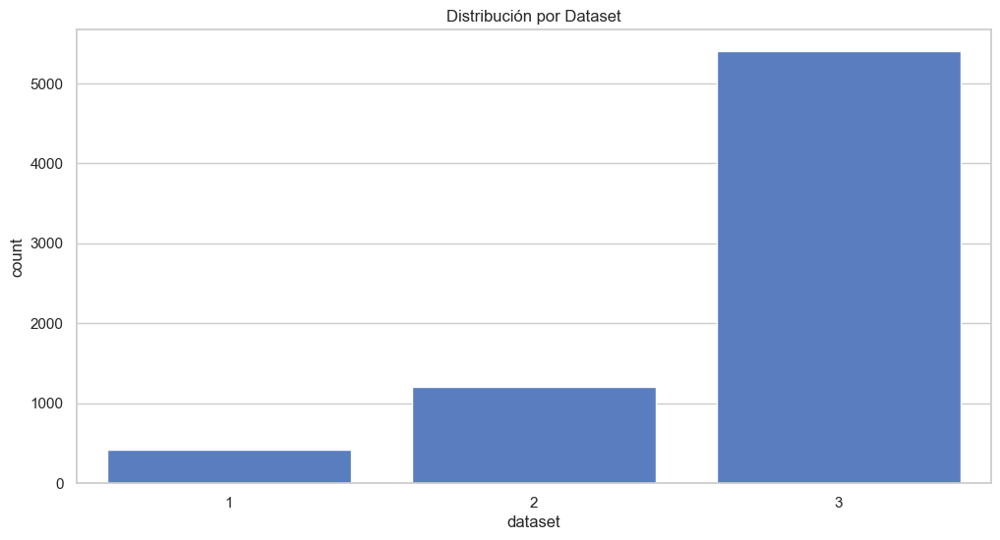
Distribución por WSI:
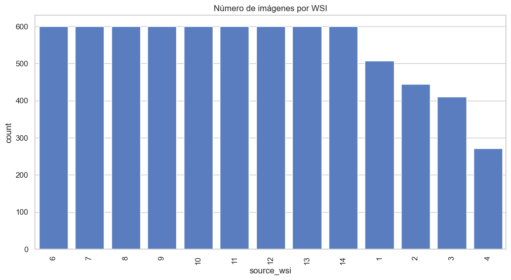
print("Distribución de edad del donante:")
sns.histplot(data=wsi_meta, x='age', bins=15, kde=True)
plt.title("Distribución de Edad")
plt.show()
print("Distribución por sexo:")
sns.countplot(data=wsi_meta, x='sex')
plt.title("Distribución por Sexo")
plt.show()
print("Distribución de IMC:")
sns.histplot(data=wsi_meta, x='bmi', kde=True)
plt.title("Distribución de IMC")
plt.show()
Distribución de edad del donante:
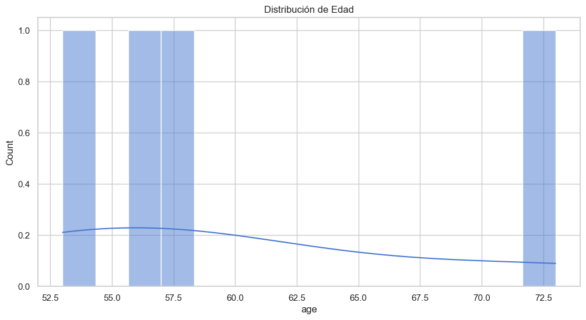
Distribución por sexo:
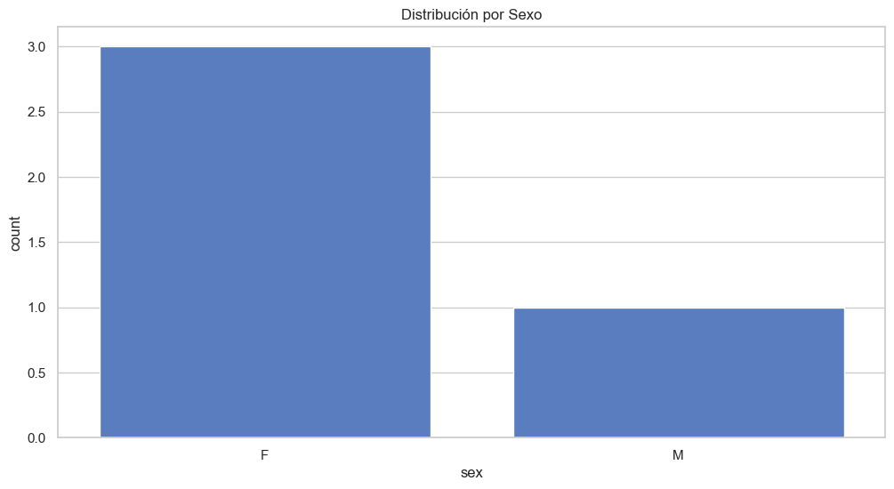
Distribución de IMC:
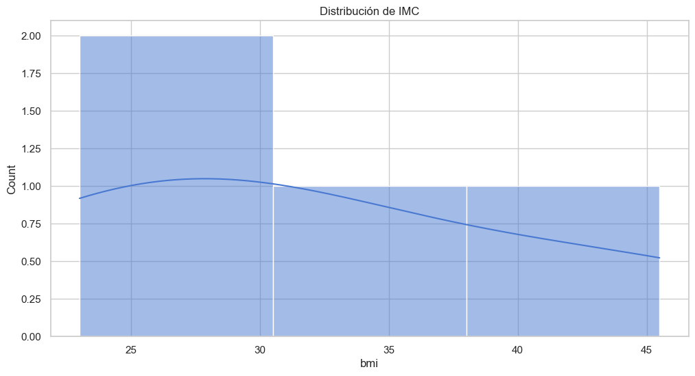
df = tile_meta.merge(wsi_meta, on="source_wsi", how="left")
print("Unión completada. Primeras filas:")
display(df.head())
print("Distribución de dataset por sexo:")
sns.countplot(data=df, x="sex", hue="dataset")
plt.title("Dataset por Sexo del Donante")
plt.show()
Unión completada. Primeras filas:
| id | source_wsi | dataset | i | j | age | sex | race | height | weight | bmi | |
|---|---|---|---|---|---|---|---|---|---|---|---|
| 0 | 0006ff2aa7cd | 2 | 2 | 16896 | 16420 | 56.0 | F | W | 175.2 | 139.6 | 45.5 |
| 1 | 000e79e206b7 | 6 | 3 | 10240 | 29184 | NaN | NaN | NaN | NaN | NaN | NaN |
| 2 | 00168d1b7522 | 2 | 2 | 14848 | 14884 | 56.0 | F | W | 175.2 | 139.6 | 45.5 |
| 3 | 00176a88fdb0 | 7 | 3 | 14848 | 25088 | NaN | NaN | NaN | NaN | NaN | NaN |
| 4 | 0033bbc76b6b | 1 | 1 | 10240 | 43008 | 58.0 | F | W | 160.0 | 59.0 | 23.0 |
Distribución de dataset por sexo:
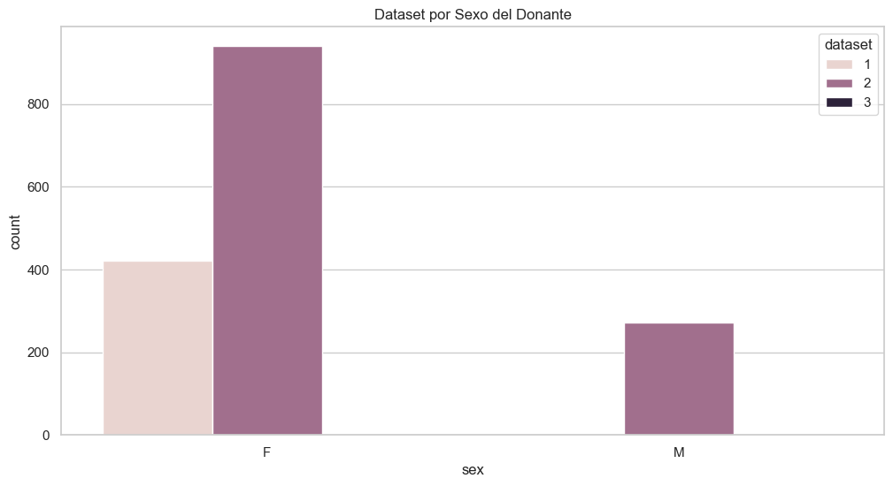
# Función para leer anotaciones por id
def leer_anotaciones_por_id(polygon_path, image_id):
with jsonlines.open(polygon_path) as reader:
for line in reader:
if line["id"] == image_id:
return line["annotations"]
return []
# Función para visualizar imagen + máscara segmentada
def mostrar_segmentacion(image_id, base_path="train", polygon_path="polygons.jsonl"):
# Ruta imagen
img_path = os.path.join(base_path, f"{image_id}.tiff")
img = tiff.imread(img_path)
if img.ndim == 3:
img = img[:, :, 0] # canal rojo para estandarizar visualización
# Crear imagen para superposición de polígonos
mask = np.zeros_like(img, dtype=np.uint8)
anotaciones = leer_anotaciones_por_id(polygon_path, image_id)
for a in anotaciones:
coords = np.array(a['coordinates'], dtype=np.int32)
tipo = a['type']
# Colores por tipo
if tipo == "blood_vessel":
color = 1 # blanco
elif tipo == "glomerulus":
color = 2 # rojo
else:
color = 3 # azul
cv2.fillPoly(mask, [coords], color)
# Visualización
plt.figure(figsize=(14, 6))
plt.subplot(1, 2, 1)
plt.imshow(img, cmap="gray")
plt.title(f"Imagen original: {image_id}")
plt.axis("off")
plt.subplot(1, 2, 2)
cmap = plt.cm.get_cmap("viridis", 4)
plt.imshow(mask, cmap=cmap)
plt.title("Segmentación por tipo (1=vaso, 2=glomerulus, 3=unsure)")
plt.axis("off")
plt.colorbar()
plt.tight_layout()
plt.show()
import jsonlines
# Cargar todas las anotaciones en una lista
anotaciones = []
with jsonlines.open(r"C:\Users\jose_\OneDrive\Documentos guardados\Maestria analisis de datos\Machine Learning Likni\Machine learning Likir\Informe_Machine_Learning\Datos_Hubmap\polygons.jsonl") as reader:
for line in reader:
image_id = line["id"]
for a in line["annotations"]:
anotaciones.append({
"id": image_id,
"type": a["type"]
})
df_annot = pd.DataFrame(anotaciones)
df_annot.head()
| id | type | |
|---|---|---|
| 0 | 0006ff2aa7cd | glomerulus |
| 1 | 0006ff2aa7cd | blood_vessel |
| 2 | 0006ff2aa7cd | blood_vessel |
| 3 | 0006ff2aa7cd | blood_vessel |
| 4 | 0006ff2aa7cd | blood_vessel |
import json
with open(r'C:\Users\jose_\OneDrive\Documentos guardados\Maestria analisis de datos\Machine Learning Likni\Machine learning Likir\Informe_Machine_Learning\Datos_Hubmap\polygons.jsonl', 'r') as json_file:
json_list = list(json_file)
tiles_dicts = []
for json_str in json_list:
tiles_dicts.append(json.loads(json_str))
print("Count of annotated tiles --", len(tiles_dicts))
Count of annotated tiles -- 1633
Como puede ver en la salida anterior, el número de mosaicos anotados es más de 4 veces más pequeño para el número total de mosaicos (7033 mosaicos / 1633 mosaicos anotados).
Ahora vamos a seleccionar un ejemlo
Visualizacion de imagenes#
class CFG:
img_path_template: str = "C:\\Users\\jose_\\OneDrive\\Documentos guardados\\Maestria analisis de datos\\Machine Learning Likni\\Machine learning Likir\\Informe_Machine_Learning\\Datos_Hubmap\\train\\{}.tif"
def get_cartesian_coords(coords, img_height):
coords_array = np.array(coords).squeeze()
xs = coords_array[:, 0]
ys = -coords_array[:, 1] + img_height
return xs, ys
def plot_annotated_image(image_dict, scale_factor: int = 1.0) -> None:
array = tiff.imread(CFG.img_path_template.format(image_dict["id"]))
img_example = Image.fromarray(array)
annotations = image_dict["annotations"]
# create figure
fig = go.Figure()
# constants
img_width = img_example.size[0]
img_height = img_example.size[1]
# add invisible scatter trace
fig.add_trace(
go.Scatter(
x=[0, img_width],
y=[0, img_height],
mode="markers",
marker_opacity=0
)
)
# configure axes
fig.update_xaxes(
visible=False,
range=[0, img_width]
)
fig.update_yaxes(
visible=False,
range=[0, img_height],
# the scaleanchor attribute ensures that the aspect ratio stays constant
scaleanchor="x"
)
# add image
fig.add_layout_image(dict(
x=0,
sizex=img_width,
y=img_height,
sizey=img_height,
xref="x", yref="y",
opacity=1.0,
layer="below",
sizing="stretch",
source=img_example
))
# add polygons
for annotation in annotations:
name = annotation["type"]
xs, ys = get_cartesian_coords(annotation["coordinates"], img_height)
fig.add_trace(go.Scatter(
x=xs, y=ys, fill="toself",
name=name,
hovertemplate="%{name}",
mode='lines'
))
# configure other layout
fig.update_layout(
width=img_width * scale_factor,
height=img_height * scale_factor,
margin={"l": 0, "r": 0, "t": 0, "b": 0},
showlegend=False
)
# disable the autosize on double click because it adds unwanted margins around the image
# and finally show figure
fig.show(config={'doubleClick': 'reset'})
tiles_dicts[1002]["id"]
'9ba29448632b'
tile_meta[tile_meta.id == "9ba29448632b"]
| id | source_wsi | dataset | i | j | |
|---|---|---|---|---|---|
| 4301 | 9ba29448632b | 2 | 1 | 27136 | 22016 |
import os
import json
from PIL import Image
from collections import Counter
import numpy as np
import pandas as pd
import plotly.express as px
import plotly.graph_objects as go
import tifffile as tiff
import matplotlib.pyplot as plt
import imagecodecs
print(imagecodecs.__version__)
2024.12.30
plot_annotated_image(tiles_dicts[1002])
sns.countplot(data=df_annot, x="type", order=df_annot["type"].value_counts().index)
plt.title("Distribución de tipos de segmentos (anotaciones)")
plt.ylabel("Cantidad de polígonos")
plt.xlabel("Tipo")
plt.show()
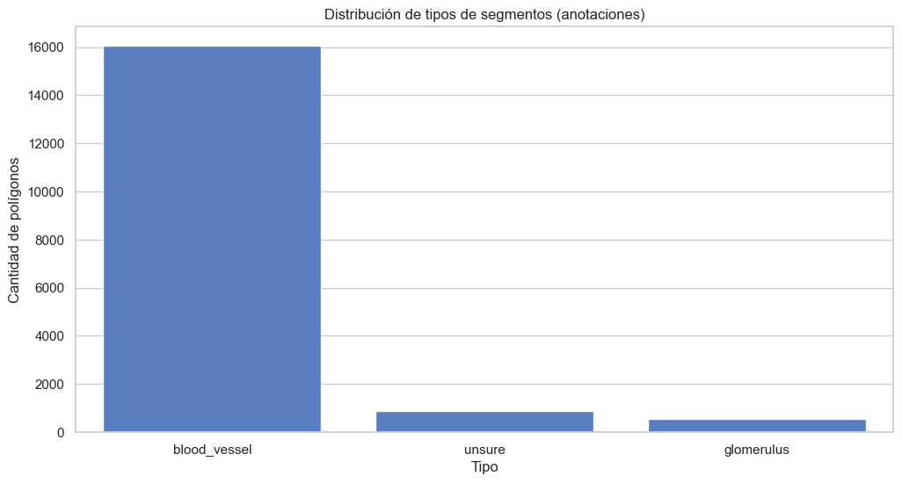
La figura muestra la distribución de los tipos de segmentos presentes en las anotaciones poligonales. Se observa un claro predominio de anotaciones tipo blood_vessel, con más de 16,000 polígonos. En contraste, las clases unsure y glomerulus representan una fracción mucho menor del total de anotaciones, lo cual podría tener implicaciones en la precisión del modelo al momento de evitar regiones ambigüas o excluidas como los glomérulos.
# Cantidad de segmentos por imagen
segments_per_image = df_annot.groupby("id")["type"].count().reset_index()
segments_per_image.columns = ["id", "num_segments"]
sns.histplot(data=segments_per_image, x="num_segments", bins=20, kde=True)
plt.title("Distribución de cantidad de polígonos por imagen")
plt.xlabel("Número de segmentos")
plt.ylabel("Número de imágenes")
plt.show()
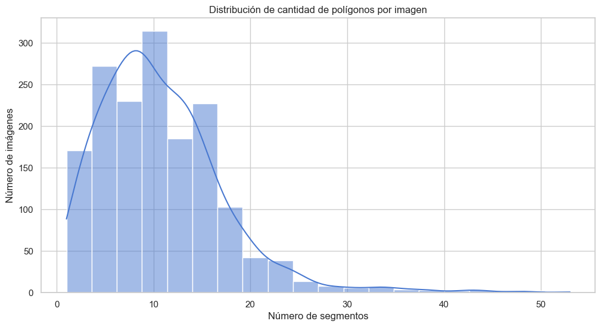
La figura representa la cantidad de segmentos por imagen. La distribución muestra una clara asimetría positiva, con una mayoría de imágenes conteniendo entre 5 y 15 segmentos. Sin embargo, existen imágenes con más de 30 segmentos, y al menos una imagen que presenta más de 50 segmentos, lo que puede considerarse como un posible outlier anatómico o técnico que requerirá atención durante el entrenamiento o validación del modelo.
# Imágenes sin anotaciones
ids_con_anotaciones = set(df_annot["id"].unique())
ids_total = set(tile_meta["id"].unique())
ids_sin_anotaciones = list(ids_total - ids_con_anotaciones)
print(f"Total de imágenes sin ninguna anotación: {len(ids_sin_anotaciones)}")
# Imágenes solo con segmentos tipo 'unsure'
solo_unsure = (
df_annot.groupby("id")["type"]
.apply(lambda x: set(x) == {"unsure"})
.reset_index()
)
ids_solo_unsure = solo_unsure[solo_unsure["type"] == True]["id"].tolist()
print(f"Imágenes con solo segmentos tipo 'unsure': {len(ids_solo_unsure)}")
# Outliers: imágenes con más de 50 segmentos
outliers = segments_per_image[segments_per_image["num_segments"] > 50]
print(f"Imágenes con más de 50 segmentos: {len(outliers)}")
Total de imágenes sin ninguna anotación: 5400
Imágenes con solo segmentos tipo 'unsure': 11
Imágenes con más de 50 segmentos: 1
🔴 5,400 imágenes no presentan ninguna anotación, lo cual podría indicar áreas del tejido sin vasos o bien errores en la curaduría o extracción de tiles.
🔵 111 imágenes tienen exclusivamente segmentos tipo unsure, lo que sugiere regiones donde ni siquiera los expertos pudieron clasificar con certeza. Estas muestras deben ser consideradas cuidadosamente, ya que podrían introducir ruido al entrenamiento supervisado.
🟠 Una imagen contiene más de 50 segmentos, representando un caso extremo que debe evaluarse si se incluye o no en el set final, o tratarse con técnicas de balanceo o ponderación.
Punto b#
# V-Net para segmentación médica (HuBMAP)
import tensorflow as tf
from tensorflow.keras import layers, models
import numpy as np
import os
import cv2
import jsonlines
from glob import glob
from tqdm import tqdm
import tifffile as tiff
import imagecodecs
from sklearn.metrics import mean_absolute_error, mean_squared_error, mean_absolute_percentage_error
print(tf.config.list_physical_devices('GPU'))
[PhysicalDevice(name='/physical_device:GPU:0', device_type='GPU')]
# ========================
# Definición de parámetros
# ========================
IMG_SIZE = 256
INPUT_SHAPE = (IMG_SIZE, IMG_SIZE, 1)
BATCH_SIZE = 4
# Definir rutas
# Carga segura de imágenes TIFF desde carpeta train/
# ========================
BASE_DIR = r"C:\\Users\\jose_\\OneDrive\\Documentos guardados\\Maestria analisis de datos\\Machine Learning Likni\\Machine learning Likir\\Informe_Machine_Learning\\Datos_Hubmap"
TRAIN_DIR = os.path.join(BASE_DIR, "train")
POLYGON_FILE = os.path.join(BASE_DIR, "polygons.jsonl")
OUT_IMAGE_DIR = os.path.join(BASE_DIR, "data_preprocessed", "images")
OUT_MASK_DIR = os.path.join(BASE_DIR, "data_preprocessed", "masks")
os.makedirs(OUT_IMAGE_DIR, exist_ok=True)
os.makedirs(OUT_MASK_DIR, exist_ok=True)
# Buscar imágenes .tif o .tiff
image_files = glob(os.path.join(TRAIN_DIR, "*.tif")) + glob(os.path.join(TRAIN_DIR, "*.tiff"))
print(f"Total imágenes encontradas en train/: {len(image_files)}")
Total imágenes encontradas en train/: 7033
# Función segura de lectura de imágenes
def safe_read_tiff(path):
try:
img = tiff.imread(path)
except Exception as e:
print(f"Error leyendo {path} con tifffile: {e}. Se intenta con OpenCV.")
img = cv2.imread(path, cv2.IMREAD_UNCHANGED)
if img is None:
raise ValueError(f"No se pudo cargar la imagen: {path}")
return img
# Probar lectura de la primera imagen
if len(image_files) > 0:
img = safe_read_tiff(image_files[0])
print(f"Tamaño de imagen cargada: {img.shape}")
else:
print("⚠️ No se encontraron imágenes .tif en la carpeta train/")
Tamaño de imagen cargada: (512, 512, 3)
# ========================
# Construir train_dataset y val_dataset desde .npy
# ========================
# Definir nuevamente las rutas donde guardaste los .npy
IMG_PATH = os.path.join(BASE_DIR, "data_preprocessed", "images")
MASK_PATH = os.path.join(BASE_DIR, "data_preprocessed", "masks")
# Función para cargar imagen y máscara
def load_image_and_mask(image_path, mask_path):
image = tf.numpy_function(np.load, [image_path], tf.uint8)
mask = tf.numpy_function(np.load, [mask_path], tf.uint8)
image.set_shape((512, 512))
mask.set_shape((512, 512))
image = tf.expand_dims(image, axis=-1) # Expandir para que tenga forma (512, 512, 1)
mask = tf.expand_dims(mask, axis=-1)
image = tf.cast(image, tf.float32) / 255.0 # Normalizar imagen a [0,1]
mask = tf.cast(mask, tf.float32) # Máscara ya es 0 o 1
return image, mask
# Función para crear dataset
def build_dataset(image_ids, batch_size=16):
img_paths = [os.path.join(IMG_PATH, f"{i}.npy") for i in image_ids]
mask_paths = [os.path.join(MASK_PATH, f"{i}.npy") for i in image_ids]
dataset = tf.data.Dataset.from_tensor_slices((img_paths, mask_paths))
dataset = dataset.map(load_image_and_mask, num_parallel_calls=tf.data.AUTOTUNE)
dataset = dataset.shuffle(1024).batch(batch_size).prefetch(tf.data.AUTOTUNE)
return dataset
# Obtener todos los IDs disponibles
all_ids = sorted([os.path.basename(x).replace(".npy", "") for x in glob(os.path.join(IMG_PATH, "*.npy"))])
# Separar en 80% train y 20% validation
split_idx = int(0.8 * len(all_ids))
train_ids = all_ids[:split_idx]
val_ids = all_ids[split_idx:]
# Construir datasets
train_dataset = build_dataset(train_ids, batch_size=16)
val_dataset = build_dataset(val_ids, batch_size=16)
print(f"✅ Train dataset size: {len(train_ids)}")
print(f"✅ Validation dataset size: {len(val_ids)}")
✅ Train dataset size: 5626
✅ Validation dataset size: 1407
# ========================
# Visualización de control de calidad
# ========================
import matplotlib.pyplot as plt
# Cargar 9 imágenes aleatorias
import random
sample_ids = random.sample(train_ids, 3)
plt.figure(figsize=(18, 18))
for idx, image_id in enumerate(sample_ids):
# Cargar imagen
img_path = os.path.join(IMG_PATH, f"{image_id}.npy")
mask_path = os.path.join(MASK_PATH, f"{image_id}.npy")
image = np.load(img_path)
mask = np.load(mask_path)
# Mostrar imagen
plt.subplot(9, 2, 2 * idx + 1)
plt.imshow(image, cmap="gray")
plt.title(f"Imagen: {image_id}")
plt.axis('off')
# Mostrar máscara
plt.subplot(9, 2, 2 * idx + 2)
plt.imshow(mask, cmap="gray")
plt.title(f"Máscara: {image_id}")
plt.axis('off')
plt.tight_layout()
plt.show()
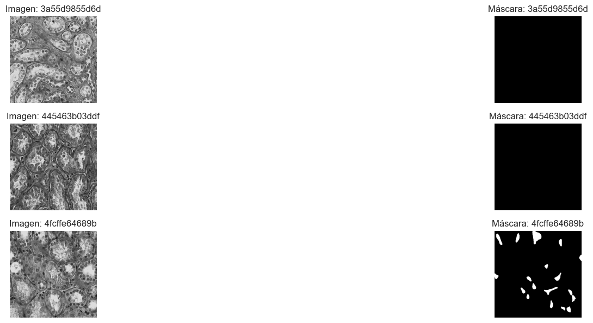
# ========================
# Definición del modelo U-Net
# ========================
from tensorflow.keras import layers, models
def conv_block(inputs, num_filters):
x = layers.Conv2D(num_filters, 3, padding="same", activation="relu")(inputs)
x = layers.BatchNormalization()(x)
x = layers.Conv2D(num_filters, 3, padding="same", activation="relu")(x)
x = layers.BatchNormalization()(x)
return x
def encoder_block(inputs, num_filters):
x = conv_block(inputs, num_filters)
p = layers.MaxPooling2D((2, 2))(x)
return x, p
def decoder_block(inputs, skip_features, num_filters):
x = layers.Conv2DTranspose(num_filters, (2, 2), strides=2, padding="same")(inputs)
x = layers.Concatenate()([x, skip_features])
x = conv_block(x, num_filters)
return x
def build_unet(input_shape):
inputs = layers.Input(input_shape)
# Encoder
s1, p1 = encoder_block(inputs, 64)
s2, p2 = encoder_block(p1, 128)
s3, p3 = encoder_block(p2, 256)
s4, p4 = encoder_block(p3, 512)
# Bridge
b1 = conv_block(p4, 1024)
# Decoder
d1 = decoder_block(b1, s4, 512)
d2 = decoder_block(d1, s3, 256)
d3 = decoder_block(d2, s2, 128)
d4 = decoder_block(d3, s1, 64)
outputs = layers.Conv2D(1, 1, padding="same", activation="sigmoid")(d4)
model = models.Model(inputs, outputs, name="U-Net")
return model
# ========================
# Instanciar modelo U-Net
# ========================
input_shape = (512, 512, 1) # Acorde a lo que hemos preprocesado
unet_model = build_unet(input_shape)
unet_model.summary()
Model: "U-Net"
__________________________________________________________________________________________________
Layer (type) Output Shape Param # Connected to
==================================================================================================
input_2 (InputLayer) [(None, 512, 512, 1 0 []
)]
conv2d_19 (Conv2D) (None, 512, 512, 64 640 ['input_2[0][0]']
)
batch_normalization_18 (BatchN (None, 512, 512, 64 256 ['conv2d_19[0][0]']
ormalization) )
conv2d_20 (Conv2D) (None, 512, 512, 64 36928 ['batch_normalization_18[0][0]']
)
batch_normalization_19 (BatchN (None, 512, 512, 64 256 ['conv2d_20[0][0]']
ormalization) )
max_pooling2d_4 (MaxPooling2D) (None, 256, 256, 64 0 ['batch_normalization_19[0][0]']
)
conv2d_21 (Conv2D) (None, 256, 256, 12 73856 ['max_pooling2d_4[0][0]']
8)
batch_normalization_20 (BatchN (None, 256, 256, 12 512 ['conv2d_21[0][0]']
ormalization) 8)
conv2d_22 (Conv2D) (None, 256, 256, 12 147584 ['batch_normalization_20[0][0]']
8)
batch_normalization_21 (BatchN (None, 256, 256, 12 512 ['conv2d_22[0][0]']
ormalization) 8)
max_pooling2d_5 (MaxPooling2D) (None, 128, 128, 12 0 ['batch_normalization_21[0][0]']
8)
conv2d_23 (Conv2D) (None, 128, 128, 25 295168 ['max_pooling2d_5[0][0]']
6)
batch_normalization_22 (BatchN (None, 128, 128, 25 1024 ['conv2d_23[0][0]']
ormalization) 6)
conv2d_24 (Conv2D) (None, 128, 128, 25 590080 ['batch_normalization_22[0][0]']
6)
batch_normalization_23 (BatchN (None, 128, 128, 25 1024 ['conv2d_24[0][0]']
ormalization) 6)
max_pooling2d_6 (MaxPooling2D) (None, 64, 64, 256) 0 ['batch_normalization_23[0][0]']
conv2d_25 (Conv2D) (None, 64, 64, 512) 1180160 ['max_pooling2d_6[0][0]']
batch_normalization_24 (BatchN (None, 64, 64, 512) 2048 ['conv2d_25[0][0]']
ormalization)
conv2d_26 (Conv2D) (None, 64, 64, 512) 2359808 ['batch_normalization_24[0][0]']
batch_normalization_25 (BatchN (None, 64, 64, 512) 2048 ['conv2d_26[0][0]']
ormalization)
max_pooling2d_7 (MaxPooling2D) (None, 32, 32, 512) 0 ['batch_normalization_25[0][0]']
conv2d_27 (Conv2D) (None, 32, 32, 1024 4719616 ['max_pooling2d_7[0][0]']
)
batch_normalization_26 (BatchN (None, 32, 32, 1024 4096 ['conv2d_27[0][0]']
ormalization) )
conv2d_28 (Conv2D) (None, 32, 32, 1024 9438208 ['batch_normalization_26[0][0]']
)
batch_normalization_27 (BatchN (None, 32, 32, 1024 4096 ['conv2d_28[0][0]']
ormalization) )
conv2d_transpose_4 (Conv2DTran (None, 64, 64, 512) 2097664 ['batch_normalization_27[0][0]']
spose)
concatenate_4 (Concatenate) (None, 64, 64, 1024 0 ['conv2d_transpose_4[0][0]',
) 'batch_normalization_25[0][0]']
conv2d_29 (Conv2D) (None, 64, 64, 512) 4719104 ['concatenate_4[0][0]']
batch_normalization_28 (BatchN (None, 64, 64, 512) 2048 ['conv2d_29[0][0]']
ormalization)
conv2d_30 (Conv2D) (None, 64, 64, 512) 2359808 ['batch_normalization_28[0][0]']
batch_normalization_29 (BatchN (None, 64, 64, 512) 2048 ['conv2d_30[0][0]']
ormalization)
conv2d_transpose_5 (Conv2DTran (None, 128, 128, 25 524544 ['batch_normalization_29[0][0]']
spose) 6)
concatenate_5 (Concatenate) (None, 128, 128, 51 0 ['conv2d_transpose_5[0][0]',
2) 'batch_normalization_23[0][0]']
conv2d_31 (Conv2D) (None, 128, 128, 25 1179904 ['concatenate_5[0][0]']
6)
batch_normalization_30 (BatchN (None, 128, 128, 25 1024 ['conv2d_31[0][0]']
ormalization) 6)
conv2d_32 (Conv2D) (None, 128, 128, 25 590080 ['batch_normalization_30[0][0]']
6)
batch_normalization_31 (BatchN (None, 128, 128, 25 1024 ['conv2d_32[0][0]']
ormalization) 6)
conv2d_transpose_6 (Conv2DTran (None, 256, 256, 12 131200 ['batch_normalization_31[0][0]']
spose) 8)
concatenate_6 (Concatenate) (None, 256, 256, 25 0 ['conv2d_transpose_6[0][0]',
6) 'batch_normalization_21[0][0]']
conv2d_33 (Conv2D) (None, 256, 256, 12 295040 ['concatenate_6[0][0]']
8)
batch_normalization_32 (BatchN (None, 256, 256, 12 512 ['conv2d_33[0][0]']
ormalization) 8)
conv2d_34 (Conv2D) (None, 256, 256, 12 147584 ['batch_normalization_32[0][0]']
8)
batch_normalization_33 (BatchN (None, 256, 256, 12 512 ['conv2d_34[0][0]']
ormalization) 8)
conv2d_transpose_7 (Conv2DTran (None, 512, 512, 64 32832 ['batch_normalization_33[0][0]']
spose) )
concatenate_7 (Concatenate) (None, 512, 512, 12 0 ['conv2d_transpose_7[0][0]',
8) 'batch_normalization_19[0][0]']
conv2d_35 (Conv2D) (None, 512, 512, 64 73792 ['concatenate_7[0][0]']
)
batch_normalization_34 (BatchN (None, 512, 512, 64 256 ['conv2d_35[0][0]']
ormalization) )
conv2d_36 (Conv2D) (None, 512, 512, 64 36928 ['batch_normalization_34[0][0]']
)
batch_normalization_35 (BatchN (None, 512, 512, 64 256 ['conv2d_36[0][0]']
ormalization) )
conv2d_37 (Conv2D) (None, 512, 512, 1) 65 ['batch_normalization_35[0][0]']
==================================================================================================
Total params: 31,054,145
Trainable params: 31,042,369
Non-trainable params: 11,776
__________________________________________________________________________________________________
unet_model.compile(
optimizer=tf.keras.optimizers.Adam(learning_rate=1e-4),
loss="binary_crossentropy",
metrics=[
tf.keras.metrics.MeanIoU(num_classes=2),
tf.keras.metrics.Recall(name="recall"),
tf.keras.metrics.Precision(name="precision")
],
run_eagerly=True
)
from tensorflow.keras.callbacks import EarlyStopping, ModelCheckpoint
import os
# Definir carpeta donde guardar los checkpoints
CHECKPOINT_DIR = os.path.join(BASE_DIR, "checkpoints")
os.makedirs(CHECKPOINT_DIR, exist_ok=True)
# Definir los callbacks
callbacks = [
EarlyStopping(
monitor='val_loss',
patience=5,
restore_best_weights=True
),
ModelCheckpoint(
filepath=os.path.join(CHECKPOINT_DIR, "unet_best_model.h5"),
monitor='val_loss',
save_best_only=True
)
]
tf.debugging.set_log_device_placement(True)
---------------------------------------------------------------------------
NameError Traceback (most recent call last)
Cell In[1], line 1
----> 1 tf.debugging.set_log_device_placement(True)
NameError: name 'tf' is not defined